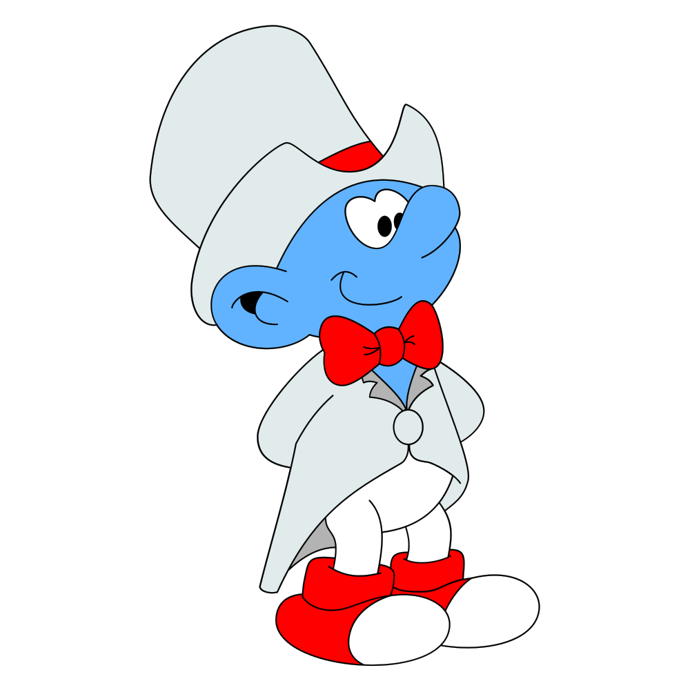
Šmoulí Bingo
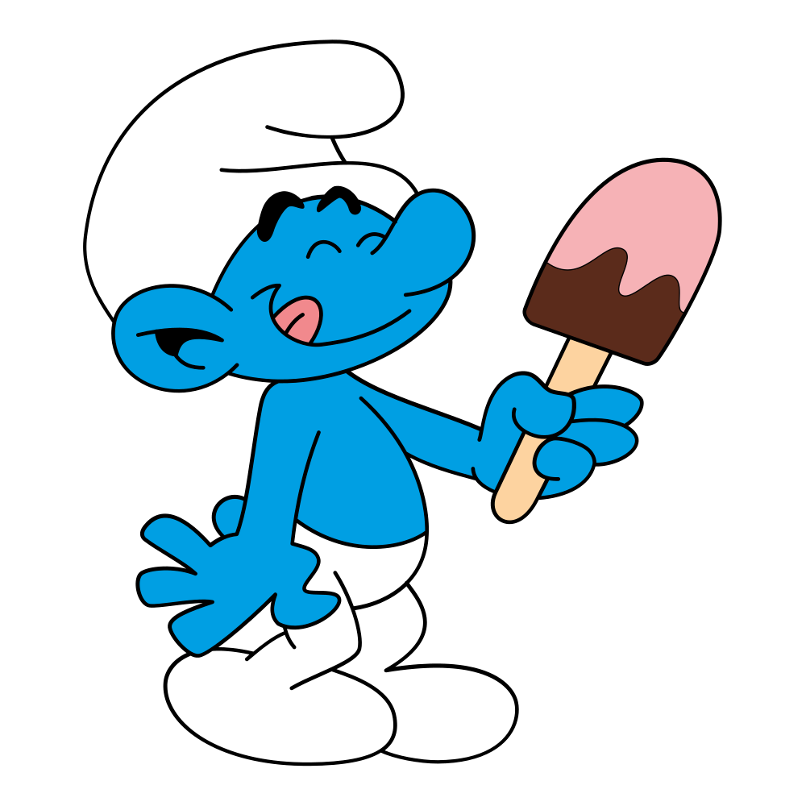
Ahoj Šmoulo! Tvým úkolem je najít někoho, na koho platí tvrzení v tabulce, a získat jeho podpis.
Každý se ti může na kartu podepsat pouze jednou. Podpisy získávej od dětí, které nejsou ve stejné šestce jako ty. Zkus oslovit někoho, koho vůbec neznáš.
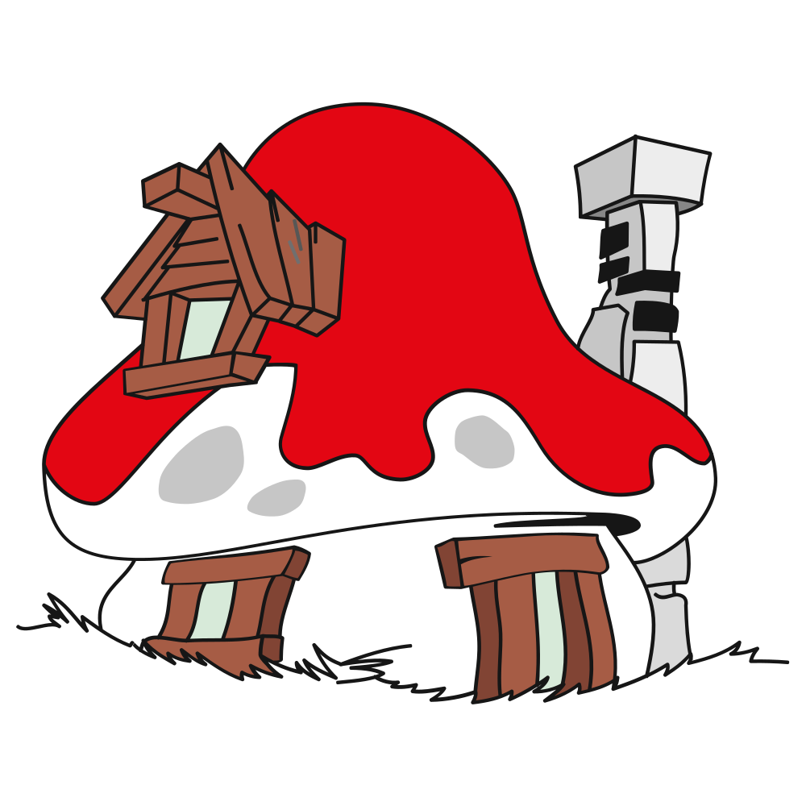
| Zná názvy alespoň 5 souhvězdí | Rád/a kreslí | Umí jezdit na koni | Umí rozdělat oheň | Nejí houby |
| Má rád/a Star Wars | Má více než 2 sourozence | Umí udělat kotrmelec vzad | Má doma křečka nebo morče | Hraje na hudební nástroj |
| Má na sobě něco červeného | Má hnědé oči | Chodí do 4. třídy | Narodil/a se v létě | Baví ho/ji matematika |
| Má rovnátka | Má u sebe KPZ | Chodí do skautu déle než 2 roky | Má na kroji víc než 3 odborky/vlčky | Baví ho/ji dějepis |
| Umí ambulantní uzel | Je jedináček | Dosáhne si jazykem na nos | Zná skautskou hymnu | Sleduje Marvel filmy |
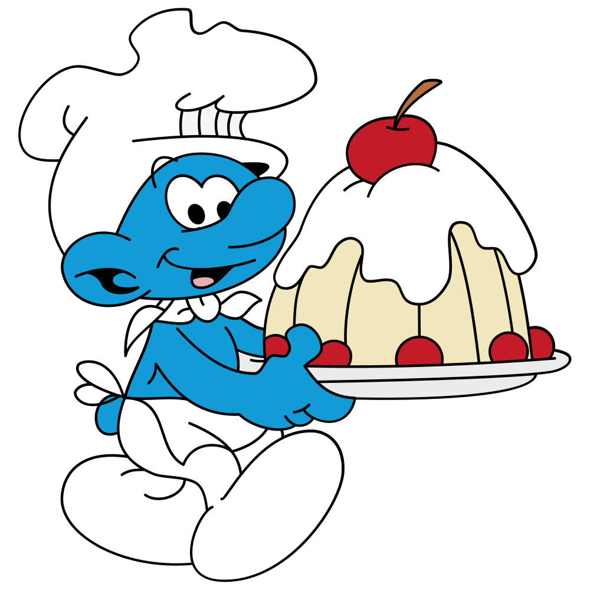
Šmoulí Bingo
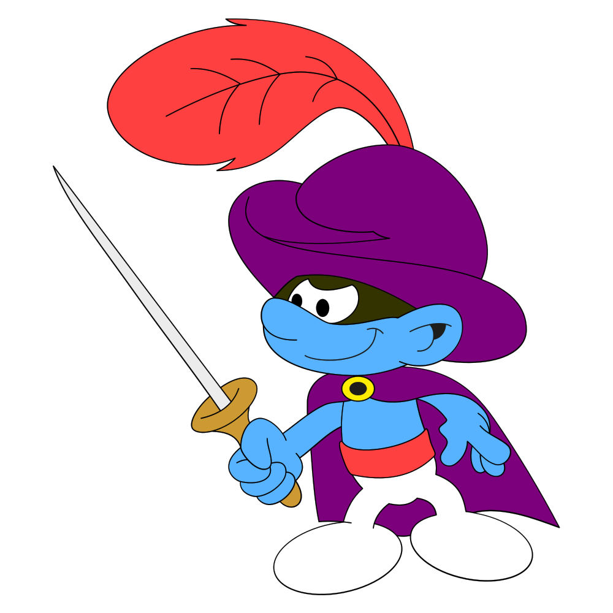
Ahoj Šmoulo! Tvým úkolem je najít někoho, na koho platí tvrzení v tabulce, a získat jeho podpis.
Každý se ti může na kartu podepsat pouze jednou. Podpisy získávej od dětí, které nejsou ve stejné šestce jako ty. Zkus oslovit někoho, koho vůbec neznáš.
| Miluje pizzu | Bojí se pavouků | Umí lyžovat | Má na kroji víc než 3 odborky/vlčky | Nebojí se tmy |
| Má mladší sestru | Rád/a čte knížky | Umí pískat na stéblo trávy | Rád/a kreslí | Miluje zmrzlinu |
| Spal/a už pod širákem | Ví, kdo byl Baden-Powell | Umí udělat kotrmelec vzad | Měl/a někdy zlomenou ruku nebo nohu | Zná hlavní město Slovenska |
| Nesnáší koprovku | Umí jezdit na snowboardu | Hraje Minecraft | Vyhrál/a nějakou medaili | Má více než 2 sourozence |
| Chodí na fotbal | Má rovnátka | Má na sobě něco zeleného | Nosí u sebe nožík | Pije nejradši čistou vodu |
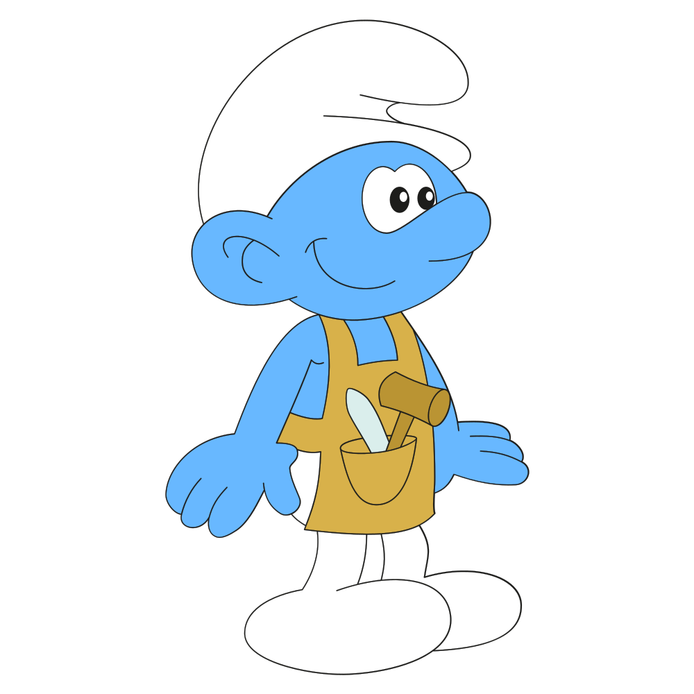
Šmoulí Bingo
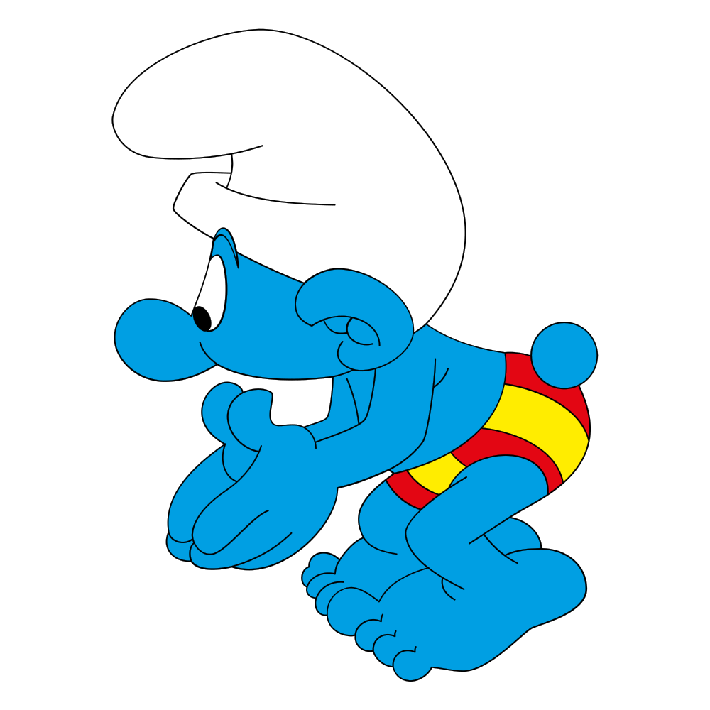
Ahoj Šmoulo! Tvým úkolem je najít někoho, na koho platí tvrzení v tabulce, a získat jeho podpis.
Každý se ti může na kartu podepsat pouze jednou. Podpisy získávej od dětí, které nejsou ve stejné šestce jako ty. Zkus oslovit někoho, koho vůbec neznáš.
| Má doma kočku | Narodil/a se v zimě | Umí lyžovat | Má modré oči | Chodí do 3. třídy |
| Umí pískat na prsty | Sbírá pokémony | Zná názvy alespoň 5 souhvězdí | Cestoval/a někdy letadlem | Chodí na fotbal |
| Má rád/a deskovky | Chodí na florbal | Má rovnátka | Chodí do 4. třídy | Pozná dub od buku |
| Umí rozdělat oheň | Umí postavit stan | Má rád/a sushi | Je jedináček | Narodil/a se v létě |
| Nejí houby | Zná skautskou hymnu | Ví, kdo byl Baden-Powell | Umí pískat na stéblo trávy | Baví ho/ji matematika |
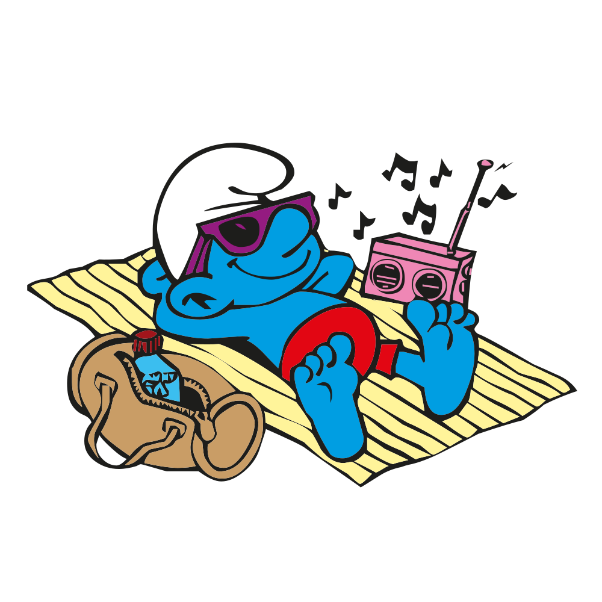
Šmoulí Bingo
Ahoj Šmoulo! Tvým úkolem je najít někoho, na koho platí tvrzení v tabulce, a získat jeho podpis.
Každý se ti může na kartu podepsat pouze jednou. Podpisy získávej od dětí, které nejsou ve stejné šestce jako ty. Zkus oslovit někoho, koho vůbec neznáš.
| Umí ambulantní uzel | Narodil/a se v zimě | Umí pískat na stéblo trávy | Chodí do 3. třídy | Má rovnátka |
| Má rád/a deskovky | Spal/a už pod širákem | Zná názvy alespoň 5 souhvězdí | Hraje Roblox | Cestoval/a někdy letadlem |
| Pozná dub od buku | Už někdy ztratil/a klíče | Miluje zmrzlinu | Nosí u sebe nožík | Umí lyžovat |
| Umí uvázat dračí smyčku | Nesnáší koprovku | Nejí houby | Pije nejradši čistou vodu | Chodí do skautu déle než 2 roky |
| Rád/a čte knížky | Umí uvařit čaj | Byl/a někdy u moře | Nosí brýle | Má rád/a sushi |
Šmoulí Bingo
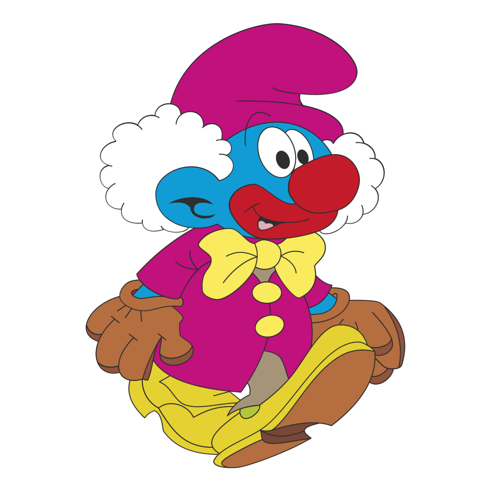
Ahoj Šmoulo! Tvým úkolem je najít někoho, na koho platí tvrzení v tabulce, a získat jeho podpis.
Každý se ti může na kartu podepsat pouze jednou. Podpisy získávej od dětí, které nejsou ve stejné šestce jako ty. Zkus oslovit někoho, koho vůbec neznáš.
| Byl/a někdy u moře | Ví, kdo byl Baden-Powell | Umí ambulantní uzel | Chodí do 5. třídy | Umí udělat kotrmelec vzad |
| Má rád/a deskovky | Dosáhne si jazykem na nos | Umí plavat kraula | Těší se do školy | Umí pískat na prsty |
| Umí morseovku | Pije nejradši čistou vodu | Rád/a tancuje | Má hnědé oči | Má modré oči |
| Má doma křečka nebo morče | Hraje Roblox | Chodí do skautu déle než 2 roky | Spal/a už pod širákem | Hraje závodně nějaký sport |
| Umí rozdělat oheň | Umí složit vlaštovku z papíru | Umí upéct buchtu | Pozná dub od buku | Má na sobě něco červeného |
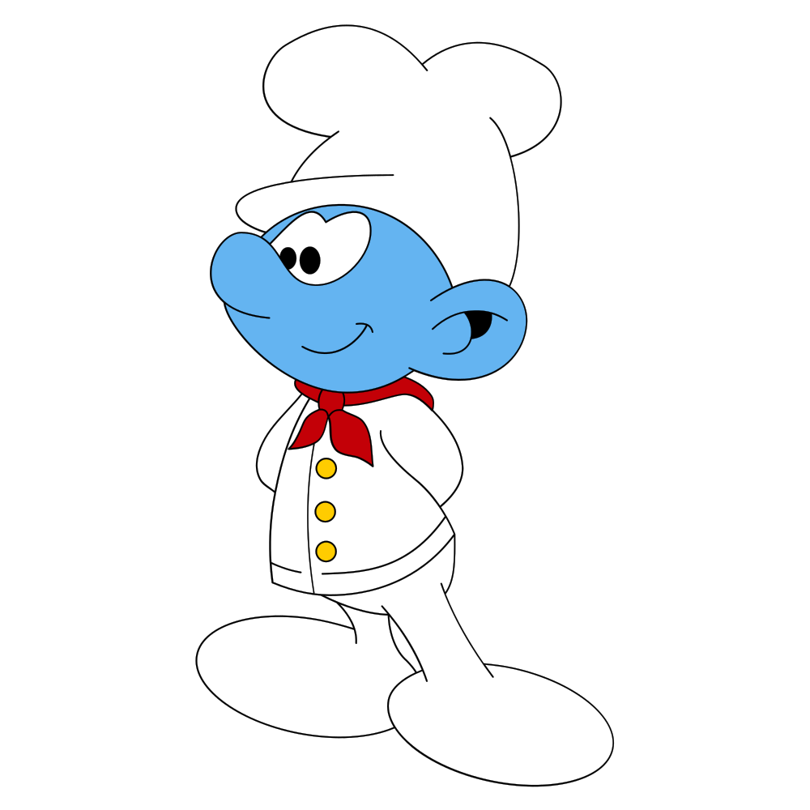
Šmoulí Bingo
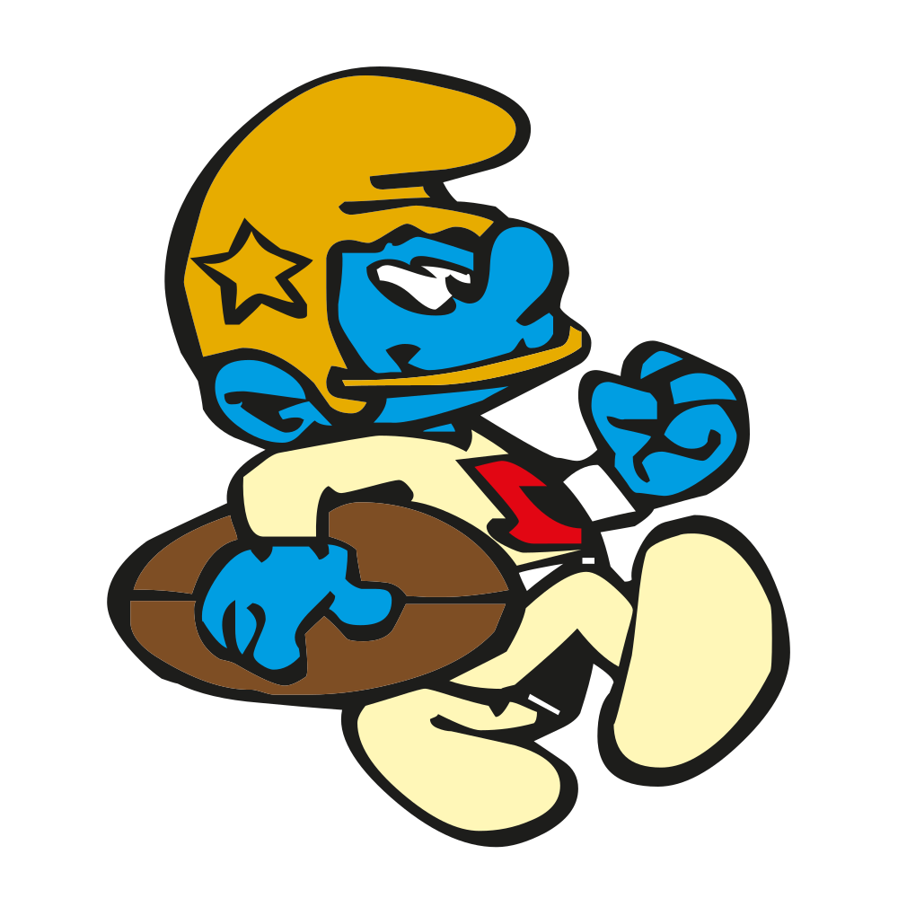
Ahoj Šmoulo! Tvým úkolem je najít někoho, na koho platí tvrzení v tabulce, a získat jeho podpis.
Každý se ti může na kartu podepsat pouze jednou. Podpisy získávej od dětí, které nejsou ve stejné šestce jako ty. Zkus oslovit někoho, koho vůbec neznáš.
| Miluje zmrzlinu | Má na sobě něco červeného | Miluje pizzu | Umí ambulantní uzel | Má na kroji víc než 3 odborky/vlčky |
| Chodí do 5. třídy | Narodil/a se v zimě | Zná názvy alespoň 5 souhvězdí | Těší se do školy | Umí upéct buchtu |
| Chodí do 3. třídy | Umí složit vlaštovku z papíru | Rád/a čte knížky | Dosáhne si jazykem na nos | Má rád/a rajskou omáčku |
| Cestoval/a někdy letadlem | Vyhrál/a nějakou medaili | Umí anglicky | Má staršího bratra | Baví ho/ji matematika |
| Hraje závodně nějaký sport | Má hnědé oči | Má mladší sestru | Má rovnátka | Bojí se pavouků |
Šmoulí Bingo
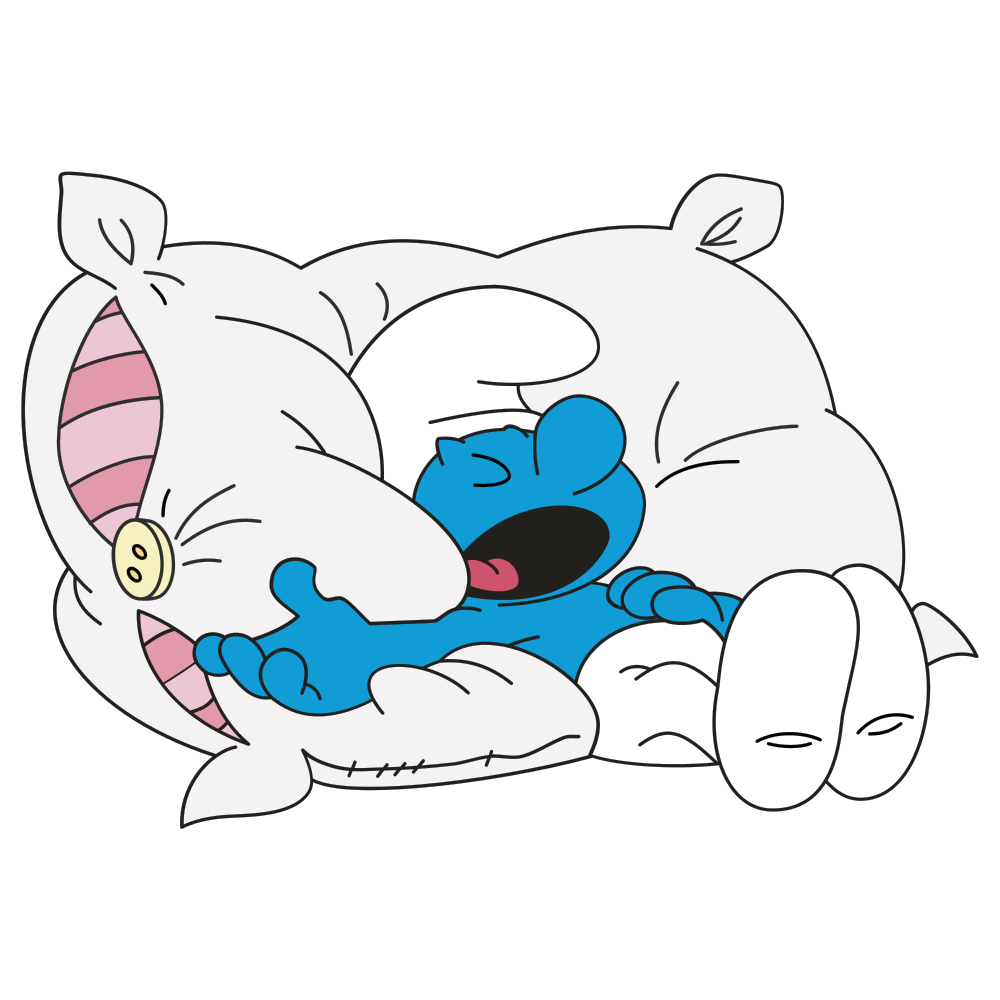
Ahoj Šmoulo! Tvým úkolem je najít někoho, na koho platí tvrzení v tabulce, a získat jeho podpis.
Každý se ti může na kartu podepsat pouze jednou. Podpisy získávej od dětí, které nejsou ve stejné šestce jako ty. Zkus oslovit někoho, koho vůbec neznáš.
| Umí ambulantní uzel | Baví ho/ji dějepis | Má staršího bratra | Sbírá pokémony | Umí udělat kotrmelec vzad |
| Bojí se pavouků | Těší se do školy | Má hnědé oči | Umí lyžovat | Má modré oči |
| Nosí u sebe nožík | Hraje závodně nějaký sport | Zná názvy alespoň 5 souhvězdí | Chodí do 4. třídy | Je levák |
| Dosáhne si jazykem na nos | Má mladší sestru | Nosí brýle | Nejí houby | Umí rozdělat oheň |
| Má rád/a sushi | Rád/a kreslí | Vyhrál/a nějakou medaili | Spal/a už pod širákem | Hraje Roblox |
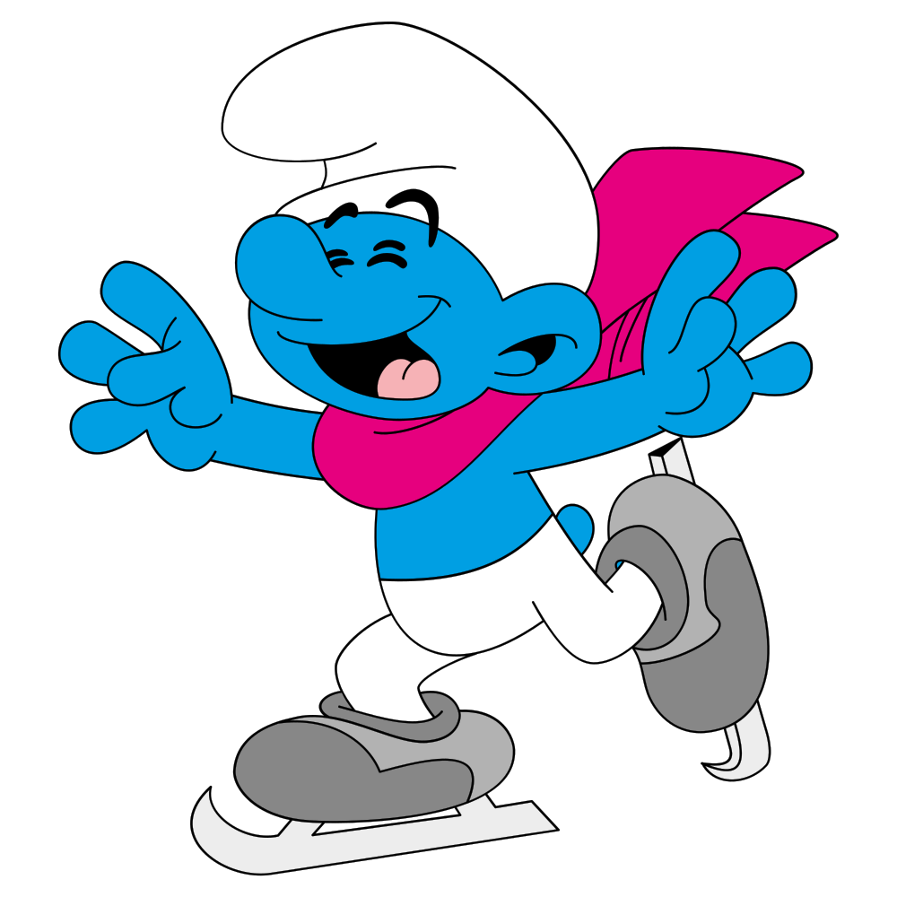
Šmoulí Bingo
Ahoj Šmoulo! Tvým úkolem je najít někoho, na koho platí tvrzení v tabulce, a získat jeho podpis.
Každý se ti může na kartu podepsat pouze jednou. Podpisy získávej od dětí, které nejsou ve stejné šestce jako ty. Zkus oslovit někoho, koho vůbec neznáš.
| Umí jezdit na koni | Rád/a kreslí | Rád/a čte knížky | Umí rozdělat oheň | Umí složit vlaštovku z papíru |
| Umí udělat hvězdu | Baví ho/ji matematika | Zná názvy alespoň 5 souhvězdí | Narodil/a se v létě | Má doma křečka nebo morče |
| Dosáhne si jazykem na nos | Chodí do skautu déle než 2 roky | Baví ho/ji dějepis | Chodí na fotbal | Umí uvázat dračí smyčku |
| Umí ambulantní uzel | Má staršího bratra | Nesnáší koprovku | Pozná dub od buku | Měl/a někdy zlomenou ruku nebo nohu |
| Chová rybičky | Umí lyžovat | Bojí se pavouků | Má hnědé oči | Umí pískat na stéblo trávy |
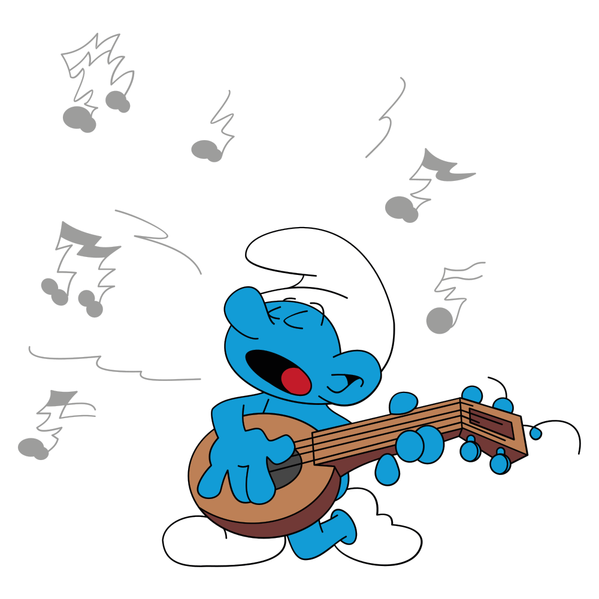
Šmoulí Bingo
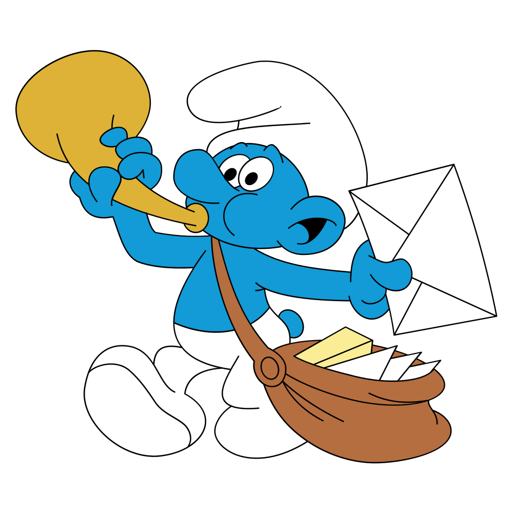
Ahoj Šmoulo! Tvým úkolem je najít někoho, na koho platí tvrzení v tabulce, a získat jeho podpis.
Každý se ti může na kartu podepsat pouze jednou. Podpisy získávej od dětí, které nejsou ve stejné šestce jako ty. Zkus oslovit někoho, koho vůbec neznáš.
| Hraje na hudební nástroj | Narodil/a se v zimě | Má rád/a rajskou omáčku | Nesnáší koprovku | Bojí se pavouků |
| Má mladší sestru | Chodí do 3. třídy | Nejí houby | Hraje závodně nějaký sport | Vyhrál/a nějakou medaili |
| Baví ho/ji matematika | Nosí u sebe nožík | Má více než 2 sourozence | Zná názvy alespoň 5 souhvězdí | Zná skautskou hymnu |
| Chodí do skautu déle než 2 roky | Byl/a někdy u moře | Umí ambulantní uzel | Umí lyžovat | Jel/a někdy na vodě v lodi |
| Hraje Minecraft | Má u sebe KPZ | Umí upéct buchtu | Pozná dub od buku | Umí anglicky |
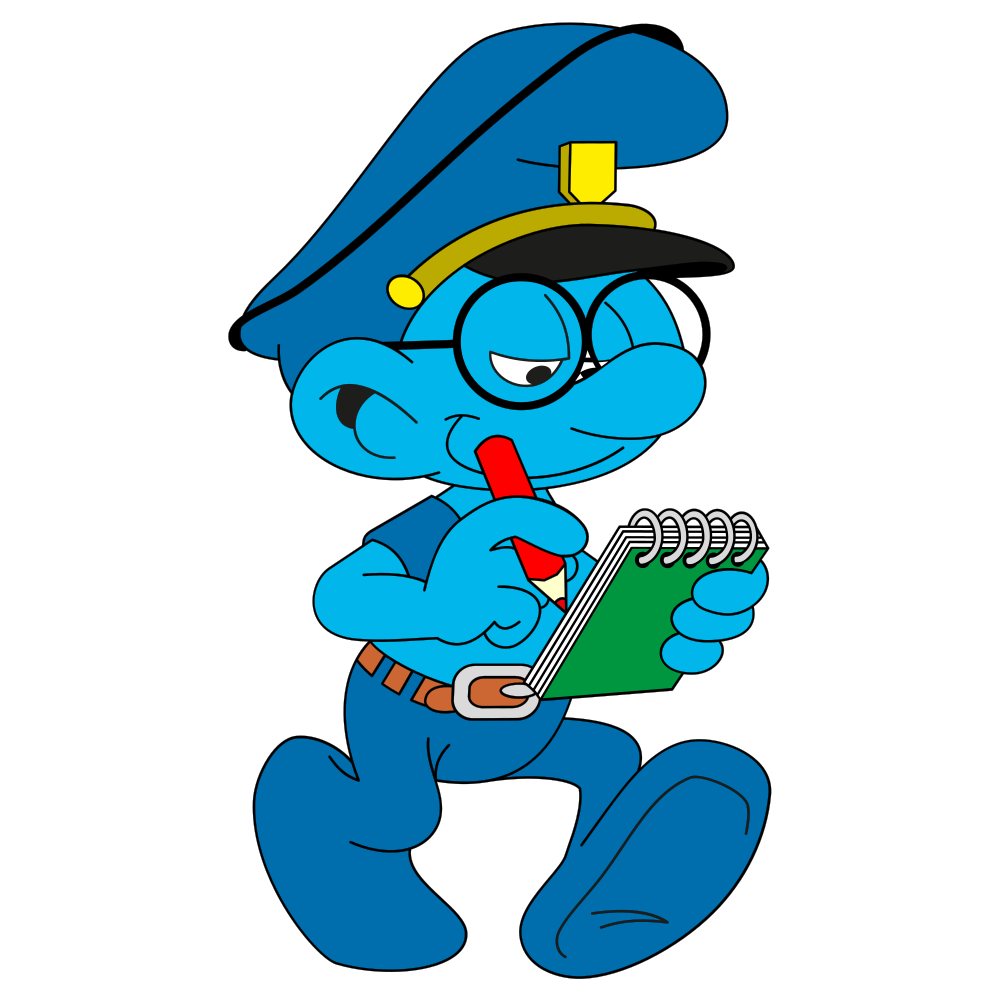
Šmoulí Bingo
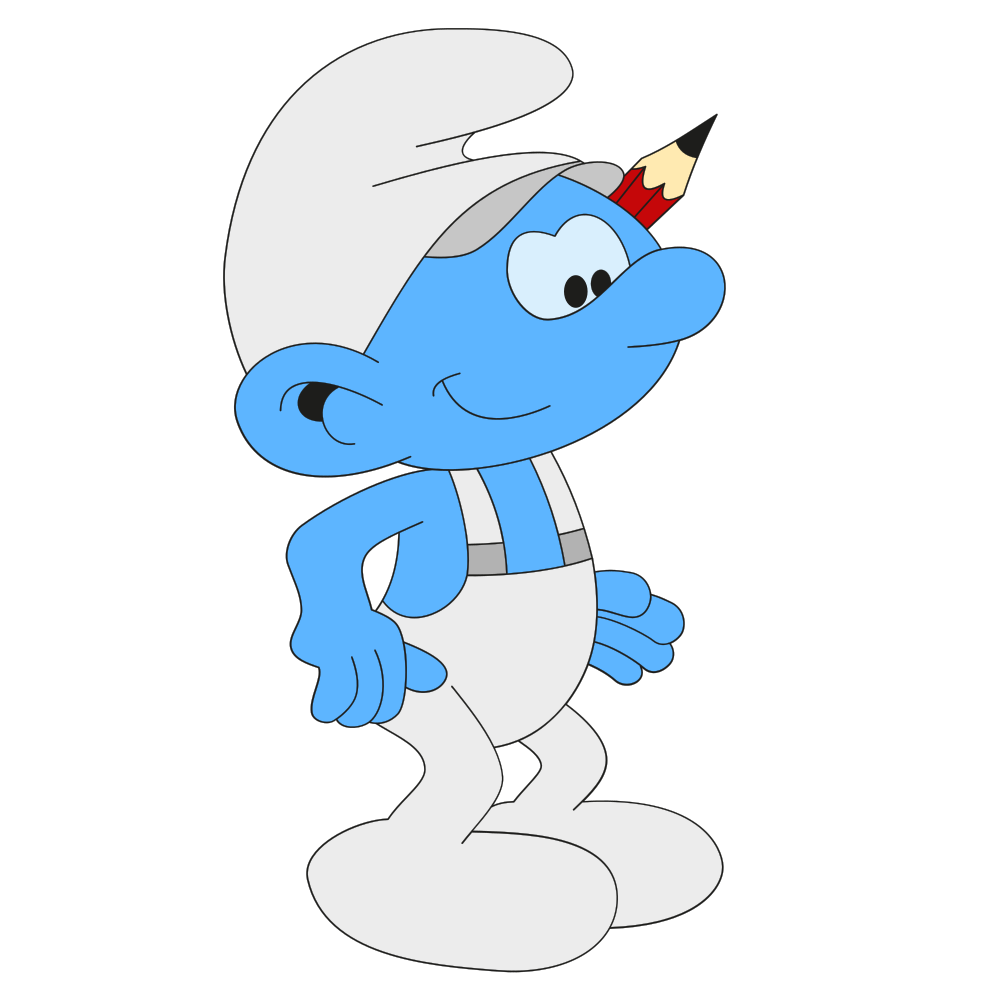
Ahoj Šmoulo! Tvým úkolem je najít někoho, na koho platí tvrzení v tabulce, a získat jeho podpis.
Každý se ti může na kartu podepsat pouze jednou. Podpisy získávej od dětí, které nejsou ve stejné šestce jako ty. Zkus oslovit někoho, koho vůbec neznáš.
| Umí ambulantní uzel | Umí jezdit na snowboardu | Má doma psa | Má hnědé oči | Těší se do školy |
| Má doma kočku | Nosí u sebe nožík | Umí udělat hvězdu | Je levák | Chová rybičky |
| Nosí brýle | Cestoval/a někdy letadlem | Má u sebe KPZ | Nebojí se tmy | Dosáhne si jazykem na nos |
| Umí pískat na prsty | Má na kroji víc než 3 odborky/vlčky | Má rád/a Star Wars | Má rád/a rajskou omáčku | Hraje závodně nějaký sport |
| Vyhrál/a nějakou medaili | Byl/a někdy u moře | Baví ho/ji matematika | Nejí houby | Chodí na florbal |
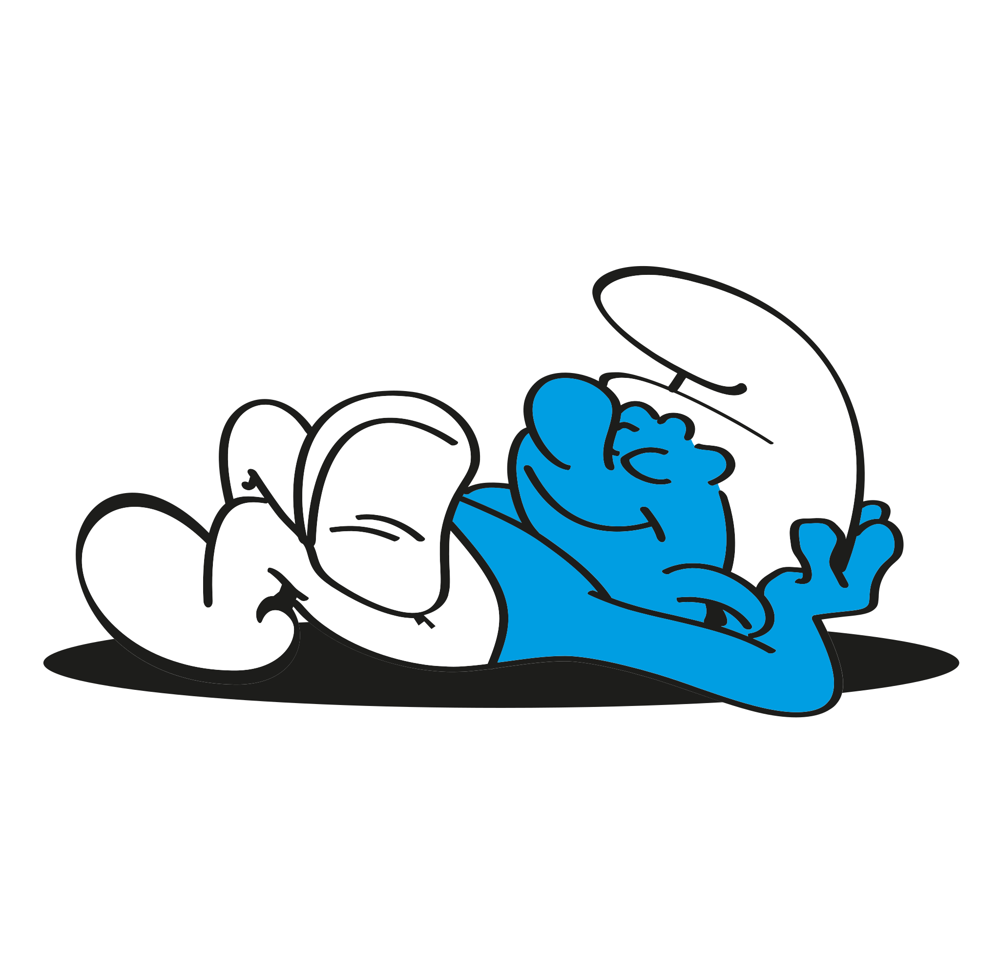
Šmoulí Bingo
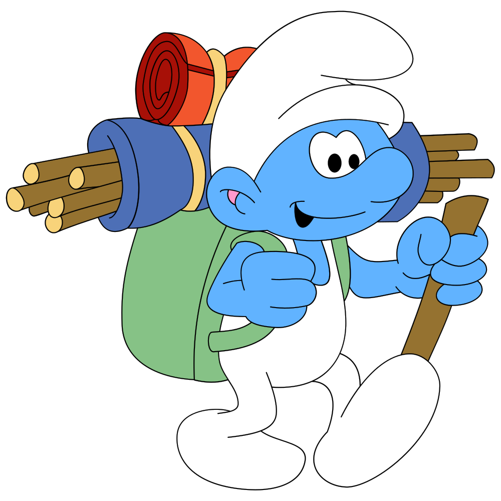
Ahoj Šmoulo! Tvým úkolem je najít někoho, na koho platí tvrzení v tabulce, a získat jeho podpis.
Každý se ti může na kartu podepsat pouze jednou. Podpisy získávej od dětí, které nejsou ve stejné šestce jako ty. Zkus oslovit někoho, koho vůbec neznáš.
| Nosí brýle | Ví, kdo byl Baden-Powell | Miluje zmrzlinu | Má staršího bratra | Umí plavat kraula |
| Má modré oči | Je levák | Umí pískat na stéblo trávy | Má na sobě něco zeleného | Sbírá pokémony |
| Měl/a někdy zlomenou ruku nebo nohu | Umí rozdělat oheň | Hraje Minecraft | Baví ho/ji matematika | Má mladší sestru |
| Miluje pizzu | Má hnědé oči | Bojí se pavouků | Jel/a někdy na vodě v lodi | Sleduje Marvel filmy |
| Umí udělat dřep na jedné noze | Hraje závodně nějaký sport | Chodí do 3. třídy | Spal/a už pod širákem | Rád/a čte knížky |
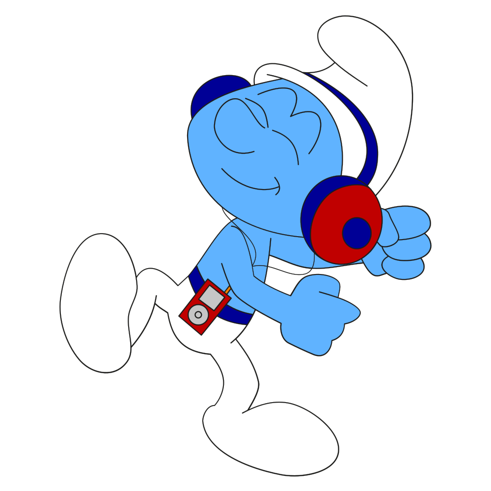
Šmoulí Bingo
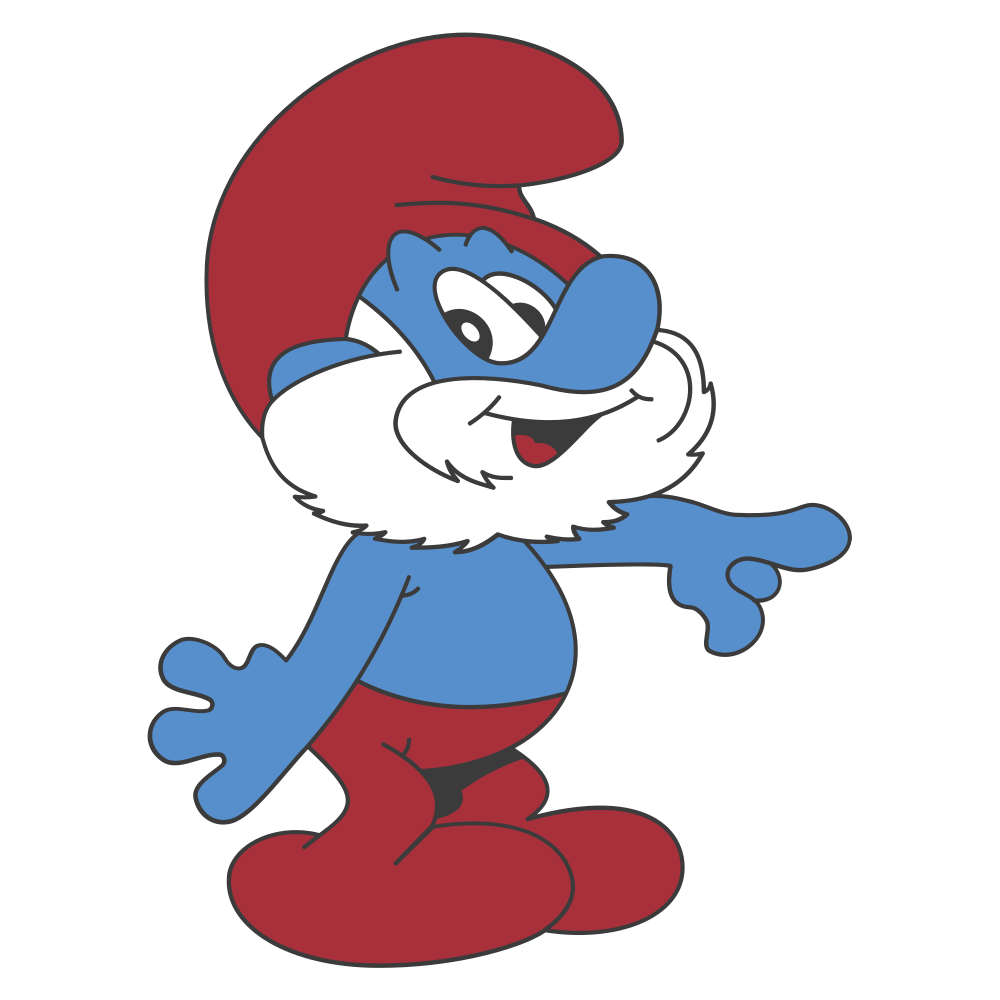
Ahoj Šmoulo! Tvým úkolem je najít někoho, na koho platí tvrzení v tabulce, a získat jeho podpis.
Každý se ti může na kartu podepsat pouze jednou. Podpisy získávej od dětí, které nejsou ve stejné šestce jako ty. Zkus oslovit někoho, koho vůbec neznáš.
| Umí morseovku | Chodí na florbal | Je levák | Miluje pizzu | Má na sobě něco červeného |
| Má doma kočku | Umí lyžovat | Baví ho/ji dějepis | Má staršího bratra | Umí udělat kotrmelec vzad |
| Nesnáší koprovku | Cestoval/a někdy letadlem | Umí ambulantní uzel | Má na sobě něco zeleného | Umí postavit stan |
| Sleduje Marvel filmy | Umí uvázat dračí smyčku | Umí rozdělat oheň | Umí upéct buchtu | Dosáhne si jazykem na nos |
| Má rád/a sushi | Rád/a kreslí | Pozná dub od buku | Umí plavat kraula | Má rovnátka |
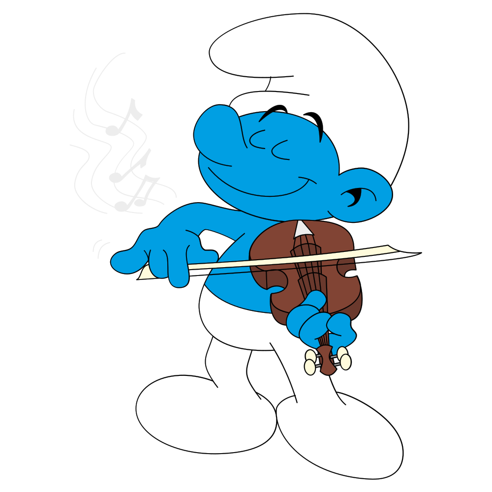
Šmoulí Bingo
Ahoj Šmoulo! Tvým úkolem je najít někoho, na koho platí tvrzení v tabulce, a získat jeho podpis.
Každý se ti může na kartu podepsat pouze jednou. Podpisy získávej od dětí, které nejsou ve stejné šestce jako ty. Zkus oslovit někoho, koho vůbec neznáš.
| Umí složit vlaštovku z papíru | Hraje Roblox | Chodí do skautu déle než 2 roky | Umí pískat na stéblo trávy | Už někdy ztratil/a klíče |
| Má doma křečka nebo morče | Cestoval/a někdy letadlem | Umí jezdit na koni | Chodí do 3. třídy | Umí plavat kraula |
| Má na kroji víc než 3 odborky/vlčky | Baví ho/ji dějepis | Těší se do školy | Je levák | Umí upéct buchtu |
| Chodí do 5. třídy | Má mladší sestru | Chodí do 4. třídy | Baví ho/ji matematika | Hraje na hudební nástroj |
| Má rád/a deskovky | Nebojí se tmy | Umí uvařit čaj | Hraje Minecraft | Narodil/a se v létě |
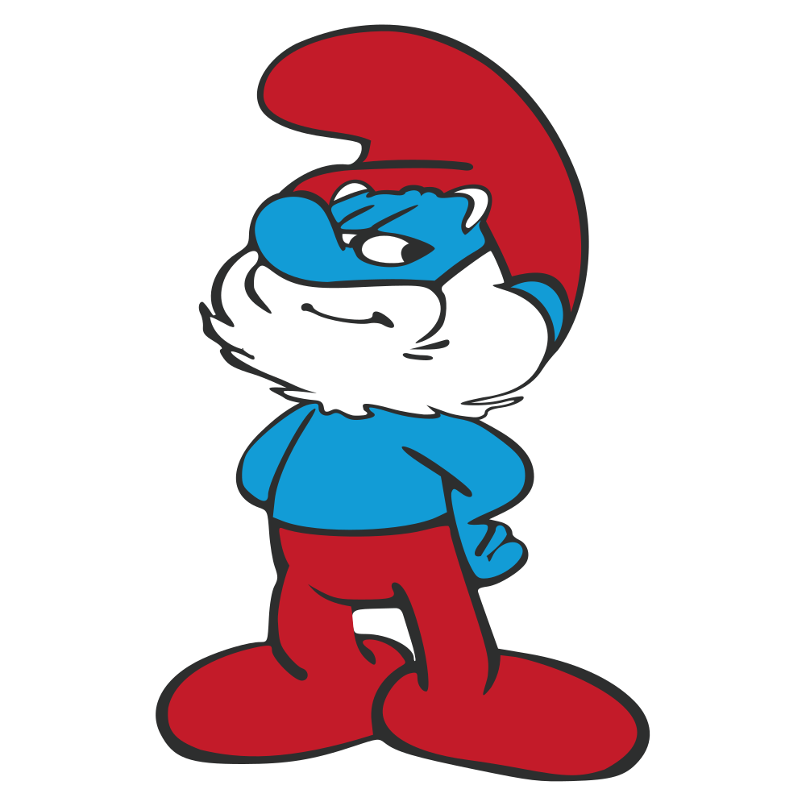
Šmoulí Bingo
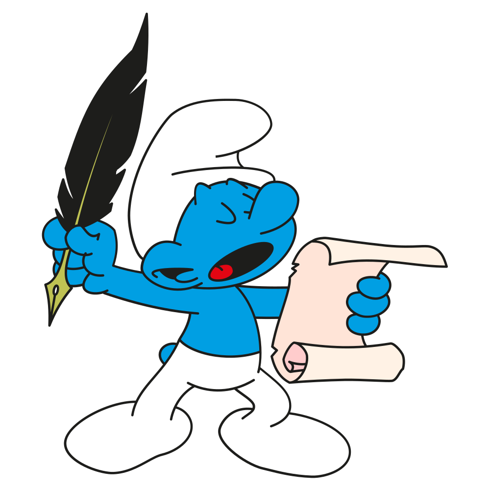
Ahoj Šmoulo! Tvým úkolem je najít někoho, na koho platí tvrzení v tabulce, a získat jeho podpis.
Každý se ti může na kartu podepsat pouze jednou. Podpisy získávej od dětí, které nejsou ve stejné šestce jako ty. Zkus oslovit někoho, koho vůbec neznáš.
| Umí anglicky | Má tento měsíc narozeniny nebo svátek | Umí udělat hvězdu | Umí lyžovat | Pije nejradši čistou vodu |
| Má rád/a sushi | Měl/a někdy zlomenou ruku nebo nohu | Umí udělat kotrmelec vzad | Umí morseovku | Má rád/a deskovky |
| Baví ho/ji dějepis | Umí postavit stan | Umí jezdit na koni | Umí pískat na prsty | Pozná dub od buku |
| Nebojí se tmy | Zná skautskou hymnu | Umí upéct buchtu | Cestoval/a někdy letadlem | Je levák |
| Rád/a kreslí | Chodí do 4. třídy | Umí jezdit na snowboardu | Umí uvařit čaj | Ví, kdo byl Baden-Powell |
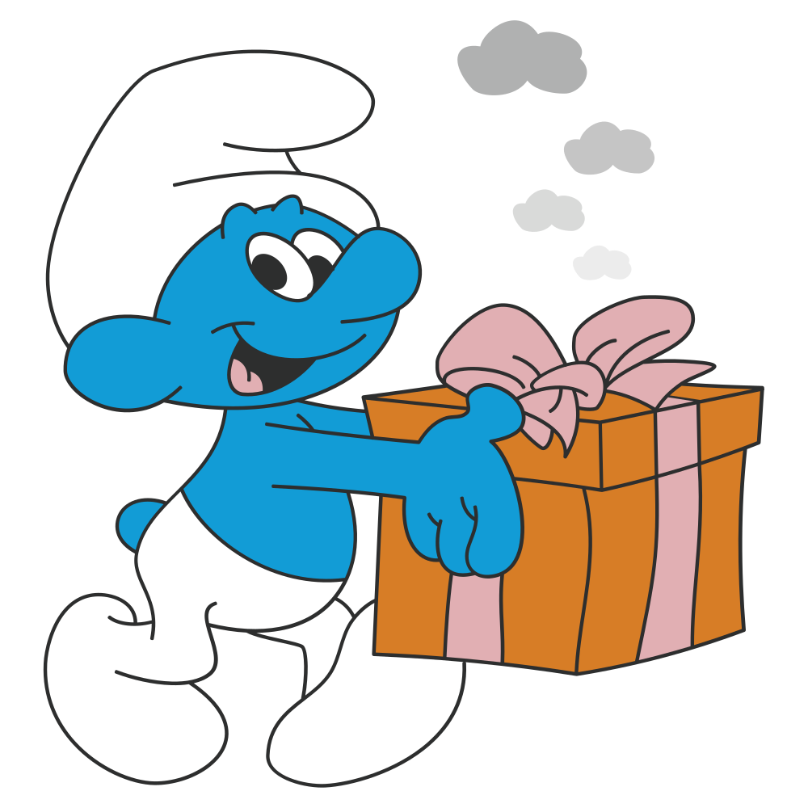
Šmoulí Bingo
Ahoj Šmoulo! Tvým úkolem je najít někoho, na koho platí tvrzení v tabulce, a získat jeho podpis.
Každý se ti může na kartu podepsat pouze jednou. Podpisy získávej od dětí, které nejsou ve stejné šestce jako ty. Zkus oslovit někoho, koho vůbec neznáš.
| Má hnědé oči | Baví ho/ji dějepis | Umí postavit stan | Sleduje Marvel filmy | Má mladší sestru |
| Je levák | Umí anglicky | Chodí na fotbal | Má modré oči | Chová rybičky |
| Miluje zmrzlinu | Měl/a někdy zlomenou ruku nebo nohu | Umí pískat na stéblo trávy | Baví ho/ji matematika | Hraje Roblox |
| Chodí na florbal | Bojí se pavouků | Hraje na hudební nástroj | Zná názvy alespoň 5 souhvězdí | Má na sobě něco červeného |
| Má rád/a sushi | Umí upéct buchtu | Nesnáší koprovku | Umí udělat hvězdu | Má staršího bratra |
Šmoulí Bingo
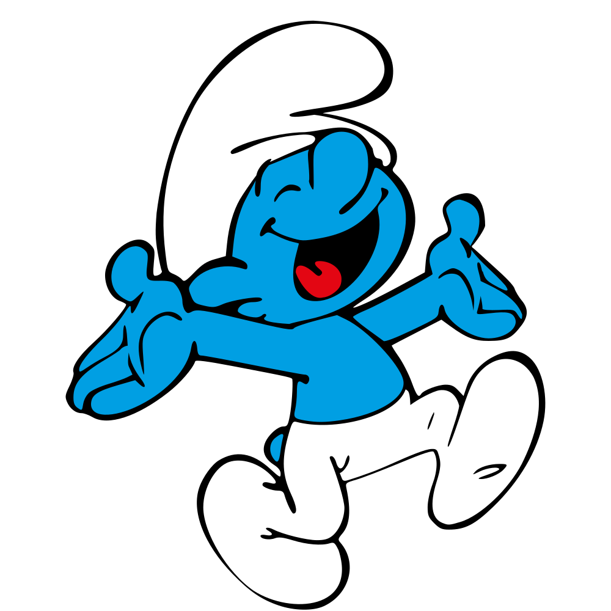
Ahoj Šmoulo! Tvým úkolem je najít někoho, na koho platí tvrzení v tabulce, a získat jeho podpis.
Každý se ti může na kartu podepsat pouze jednou. Podpisy získávej od dětí, které nejsou ve stejné šestce jako ty. Zkus oslovit někoho, koho vůbec neznáš.
| Baví ho/ji dějepis | Spal/a už pod širákem | Je levák | Těší se do školy | Umí lyžovat |
| Vyhrál/a nějakou medaili | Hraje Minecraft | Umí morseovku | Má na sobě něco zeleného | Nosí brýle |
| Nejí houby | Pije nejradši čistou vodu | Má na kroji víc než 3 odborky/vlčky | Umí ambulantní uzel | Umí pískat na prsty |
| Umí složit vlaštovku z papíru | Zná hlavní město Slovenska | Chodí do skautu déle než 2 roky | Rád/a tancuje | Sleduje Marvel filmy |
| Má více než 2 sourozence | Umí anglicky | Ví, kdo byl Baden-Powell | Umí rozdělat oheň | Umí udělat hvězdu |
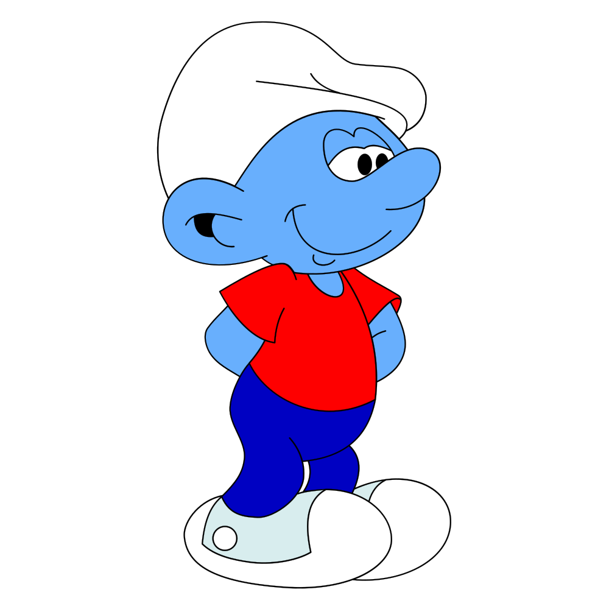
Šmoulí Bingo
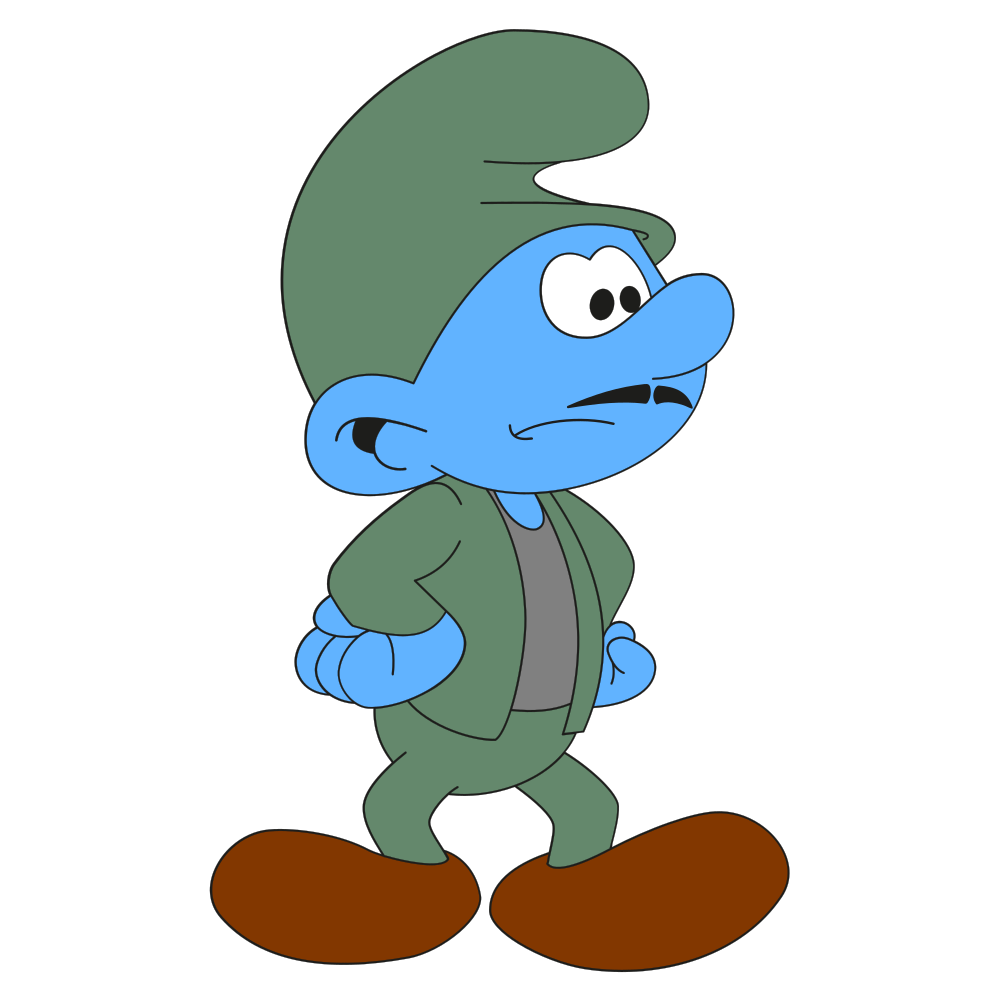
Ahoj Šmoulo! Tvým úkolem je najít někoho, na koho platí tvrzení v tabulce, a získat jeho podpis.
Každý se ti může na kartu podepsat pouze jednou. Podpisy získávej od dětí, které nejsou ve stejné šestce jako ty. Zkus oslovit někoho, koho vůbec neznáš.
| Chodí do 3. třídy | Umí lyžovat | Má rád/a rajskou omáčku | Zná názvy alespoň 5 souhvězdí | Těší se do školy |
| Byl/a někdy u moře | Má rád/a Star Wars | Pije nejradši čistou vodu | Umí udělat kotrmelec vzad | Umí udělat dřep na jedné noze |
| Umí uvázat dračí smyčku | Rád/a kreslí | Umí pískat na stéblo trávy | Umí složit vlaštovku z papíru | Vyhrál/a nějakou medaili |
| Už někdy ztratil/a klíče | Narodil/a se v zimě | Baví ho/ji dějepis | Měl/a někdy zlomenou ruku nebo nohu | Umí ambulantní uzel |
| Má modré oči | Má na sobě něco červeného | Cestoval/a někdy letadlem | Nosí u sebe nožík | Má na sobě něco zeleného |
Šmoulí Bingo
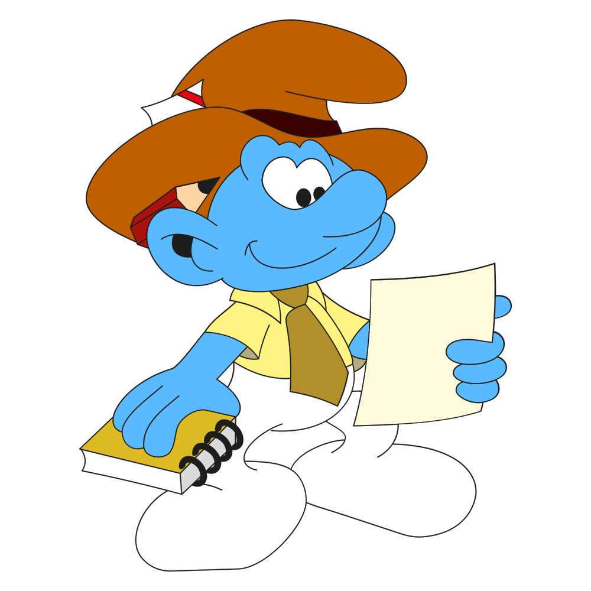
Ahoj Šmoulo! Tvým úkolem je najít někoho, na koho platí tvrzení v tabulce, a získat jeho podpis.
Každý se ti může na kartu podepsat pouze jednou. Podpisy získávej od dětí, které nejsou ve stejné šestce jako ty. Zkus oslovit někoho, koho vůbec neznáš.
| Má na sobě něco zeleného | Umí udělat hvězdu | Umí uvázat dračí smyčku | Má mladší sestru | Je jedináček |
| Rád/a tancuje | Umí složit vlaštovku z papíru | Nejí houby | Nosí brýle | Umí pískat na prsty |
| Má u sebe KPZ | Rád/a čte knížky | Pozná dub od buku | Má modré oči | Umí jezdit na koni |
| Má tento měsíc narozeniny nebo svátek | Chodí do 5. třídy | Ví, kdo byl Baden-Powell | Těší se do školy | Hraje Roblox |
| Chová rybičky | Narodil/a se v létě | Umí postavit stan | Hraje na hudební nástroj | Má rád/a Star Wars |
Ahoj Šmoulo! Tvým úkolem je najít někoho, na koho platí tvrzení v tabulce, a získat jeho podpis.
Každý se ti může na kartu podepsat pouze jednou. Podpisy získávej od dětí, které nejsou ve stejné šestce jako ty. Zkus oslovit někoho, koho vůbec neznáš.
| Má na sobě něco zeleného | Umí plavat kraula | Sleduje Marvel filmy | Má rád/a Star Wars | Bojí se pavouků |
| Narodil/a se v létě | Umí složit vlaštovku z papíru | Chodí na florbal | Nejí houby | Umí jezdit na koni |
| Nosí brýle | Má staršího bratra | Má na kroji víc než 3 odborky/vlčky | Má rád/a deskovky | Už někdy ztratil/a klíče |
| Pozná dub od buku | Umí anglicky | Umí rozdělat oheň | Baví ho/ji dějepis | Umí udělat hvězdu |
| Zná názvy alespoň 5 souhvězdí | Je levák | Umí pískat na stéblo trávy | Nesnáší koprovku | Umí pískat na prsty |
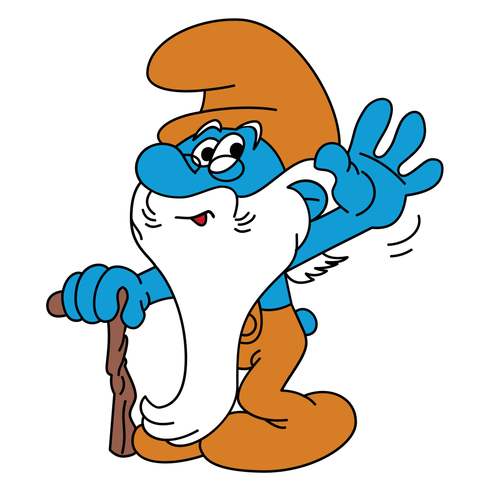
Šmoulí Bingo
Ahoj Šmoulo! Tvým úkolem je najít někoho, na koho platí tvrzení v tabulce, a získat jeho podpis.
Každý se ti může na kartu podepsat pouze jednou. Podpisy získávej od dětí, které nejsou ve stejné šestce jako ty. Zkus oslovit někoho, koho vůbec neznáš.
| Byl/a někdy u moře | Nosí brýle | Sbírá pokémony | Pije nejradši čistou vodu | Umí rozdělat oheň |
| Hraje Roblox | Hraje závodně nějaký sport | Spal/a už pod širákem | Baví ho/ji matematika | Umí plavat kraula |
| Umí upéct buchtu | Chodí na fotbal | Chodí do 5. třídy | Umí pískat na prsty | Zná názvy alespoň 5 souhvězdí |
| Pozná dub od buku | Narodil/a se v zimě | Je levák | Zná skautskou hymnu | Miluje zmrzlinu |
| Nebojí se tmy | Má více než 2 sourozence | Už někdy ztratil/a klíče | Má modré oči | Má tento měsíc narozeniny nebo svátek |
Ahoj Šmoulo! Tvým úkolem je najít někoho, na koho platí tvrzení v tabulce, a získat jeho podpis.
Každý se ti může na kartu podepsat pouze jednou. Podpisy získávej od dětí, které nejsou ve stejné šestce jako ty. Zkus oslovit někoho, koho vůbec neznáš.
| Umí postavit stan | Má rád/a Star Wars | Těší se do školy | Má tento měsíc narozeniny nebo svátek | Má rád/a rajskou omáčku |
| Má více než 2 sourozence | Má rovnátka | Narodil/a se v zimě | Umí udělat kotrmelec vzad | Umí upéct buchtu |
| Umí pískat na prsty | Umí udělat hvězdu | Hraje Roblox | Má na kroji víc než 3 odborky/vlčky | Je levák |
| Umí rozdělat oheň | Miluje pizzu | Má staršího bratra | Nebojí se tmy | Rád/a tancuje |
| Chová rybičky | Pozná dub od buku | Umí lyžovat | Nosí u sebe nožík | Nesnáší koprovku |
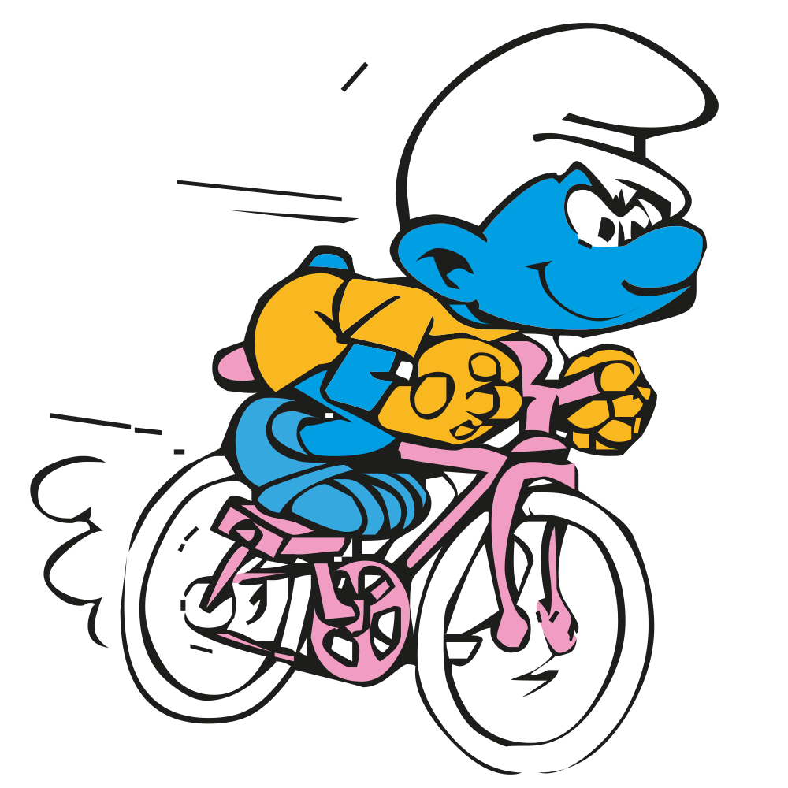
Šmoulí Bingo
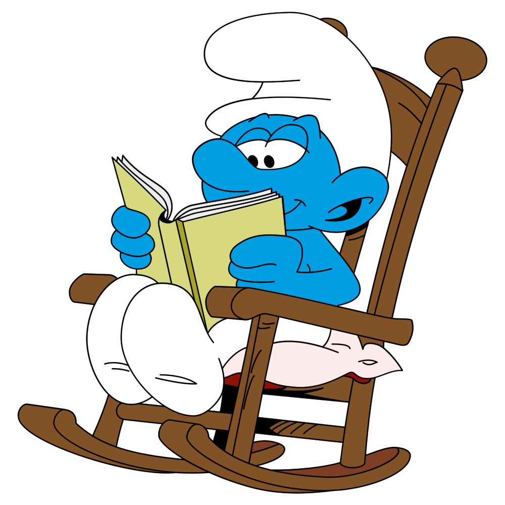
Ahoj Šmoulo! Tvým úkolem je najít někoho, na koho platí tvrzení v tabulce, a získat jeho podpis.
Každý se ti může na kartu podepsat pouze jednou. Podpisy získávej od dětí, které nejsou ve stejné šestce jako ty. Zkus oslovit někoho, koho vůbec neznáš.
| Umí morseovku | Umí rozdělat oheň | Má staršího bratra | Měl/a někdy zlomenou ruku nebo nohu | Vyhrál/a nějakou medaili |
| Umí uvařit čaj | Umí anglicky | Je levák | Ví, kdo byl Baden-Powell | Zná názvy alespoň 5 souhvězdí |
| Nejí houby | Je jedináček | Chová rybičky | Baví ho/ji matematika | Má modré oči |
| Má rád/a deskovky | Těší se do školy | Už někdy ztratil/a klíče | Miluje pizzu | Má hnědé oči |
| Pozná dub od buku | Umí pískat na prsty | Hraje Roblox | Rád/a tancuje | Chodí na fotbal |
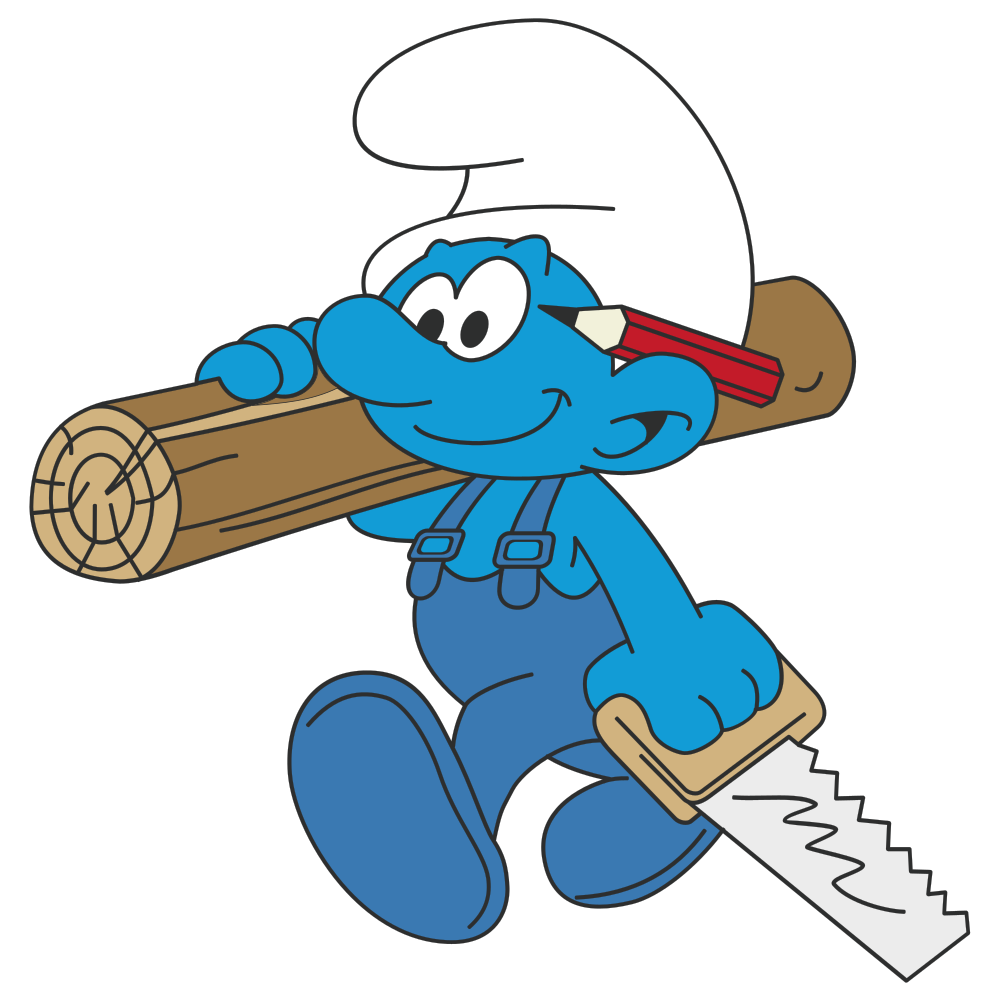
Šmoulí Bingo
Ahoj Šmoulo! Tvým úkolem je najít někoho, na koho platí tvrzení v tabulce, a získat jeho podpis.
Každý se ti může na kartu podepsat pouze jednou. Podpisy získávej od dětí, které nejsou ve stejné šestce jako ty. Zkus oslovit někoho, koho vůbec neznáš.
| Umí ambulantní uzel | Zná skautskou hymnu | Sleduje Marvel filmy | Chová rybičky | Umí morseovku |
| Nesnáší koprovku | Umí uvázat dračí smyčku | Baví ho/ji dějepis | Má doma křečka nebo morče | Nosí u sebe nožík |
| Zná hlavní město Slovenska | Umí udělat kotrmelec vzad | Má na sobě něco zeleného | Pozná dub od buku | Chodí na florbal |
| Pije nejradši čistou vodu | Hraje na hudební nástroj | Má rád/a sushi | Sbírá pokémony | Má hnědé oči |
| Má rád/a Star Wars | Má doma kočku | Umí pískat na stéblo trávy | Spal/a už pod širákem | Má modré oči |
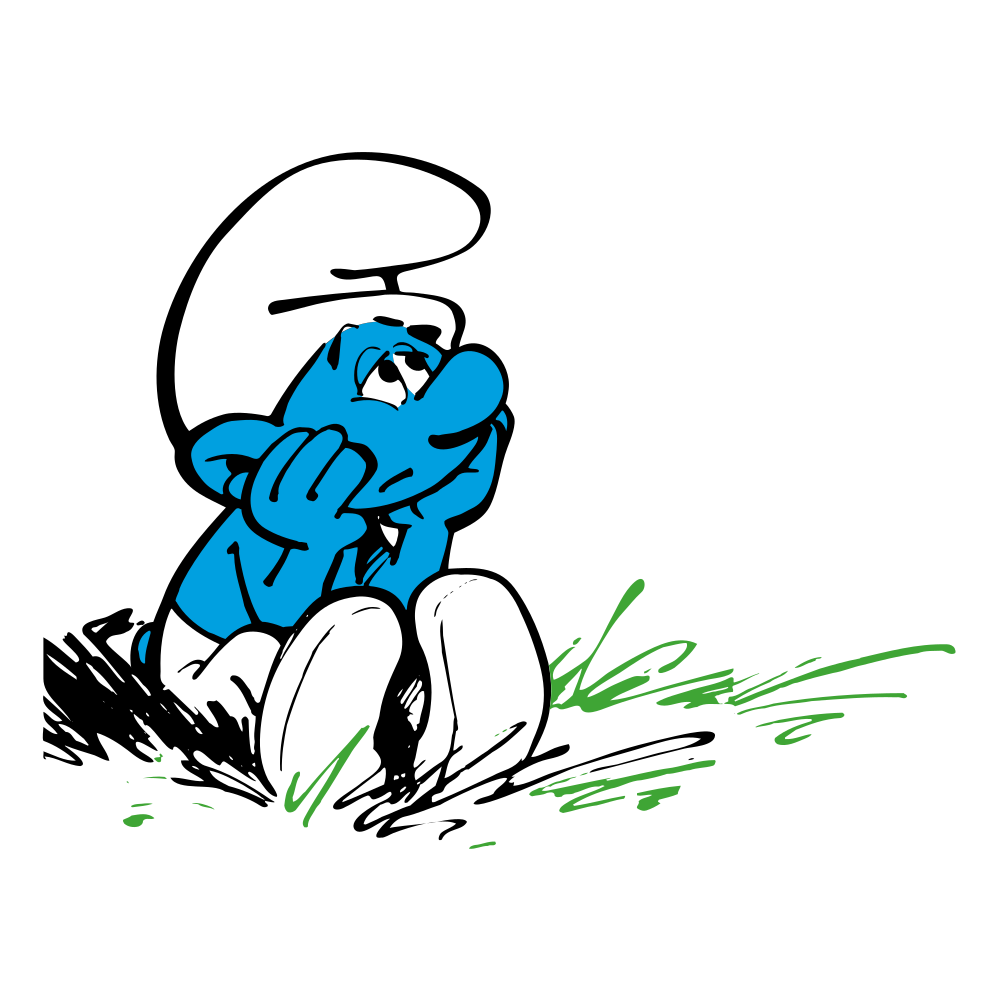
Šmoulí Bingo
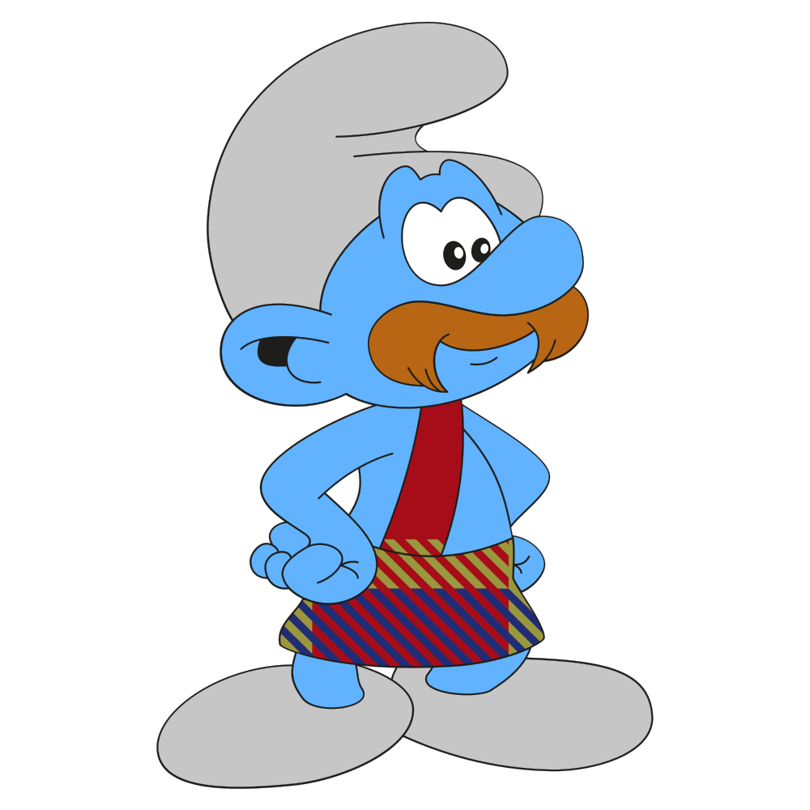
Ahoj Šmoulo! Tvým úkolem je najít někoho, na koho platí tvrzení v tabulce, a získat jeho podpis.
Každý se ti může na kartu podepsat pouze jednou. Podpisy získávej od dětí, které nejsou ve stejné šestce jako ty. Zkus oslovit někoho, koho vůbec neznáš.
| Sbírá pokémony | Umí jezdit na snowboardu | Dosáhne si jazykem na nos | Umí pískat na prsty | Umí lyžovat |
| Umí plavat kraula | Chodí na florbal | Rád/a čte knížky | Umí ambulantní uzel | Zná skautskou hymnu |
| Má rád/a Star Wars | Jel/a někdy na vodě v lodi | Umí udělat hvězdu | Má doma kočku | Ví, kdo byl Baden-Powell |
| Umí rozdělat oheň | Je levák | Nejí houby | Narodil/a se v létě | Umí jezdit na koni |
| Hraje Roblox | Umí pískat na stéblo trávy | Hraje na hudební nástroj | Umí udělat dřep na jedné noze | Vyhrál/a nějakou medaili |
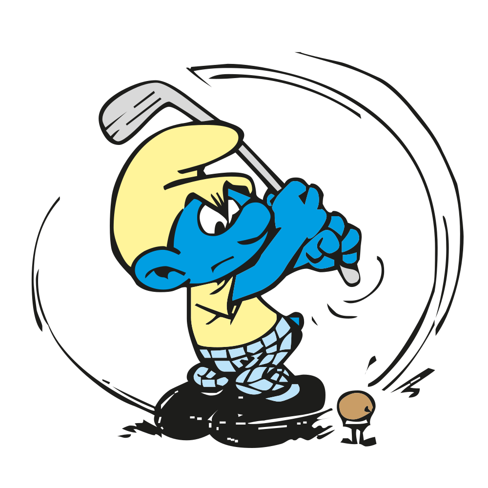
Šmoulí Bingo
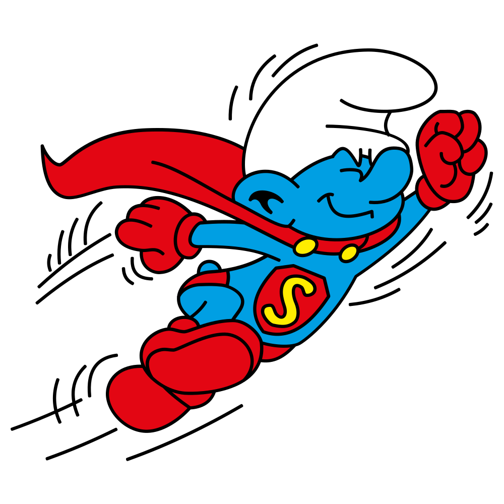
Ahoj Šmoulo! Tvým úkolem je najít někoho, na koho platí tvrzení v tabulce, a získat jeho podpis.
Každý se ti může na kartu podepsat pouze jednou. Podpisy získávej od dětí, které nejsou ve stejné šestce jako ty. Zkus oslovit někoho, koho vůbec neznáš.
| Umí pískat na prsty | Sleduje Marvel filmy | Má na sobě něco červeného | Už někdy ztratil/a klíče | Má hnědé oči |
| Umí plavat kraula | Umí udělat kotrmelec vzad | Nosí brýle | Má doma křečka nebo morče | Umí postavit stan |
| Má doma kočku | Chodí do 5. třídy | Je levák | Hraje na hudební nástroj | Miluje zmrzlinu |
| Umí upéct buchtu | Zná názvy alespoň 5 souhvězdí | Hraje Minecraft | Má rád/a sushi | Ví, kdo byl Baden-Powell |
| Chodí do skautu déle než 2 roky | Má tento měsíc narozeniny nebo svátek | Baví ho/ji dějepis | Má u sebe KPZ | Umí pískat na stéblo trávy |
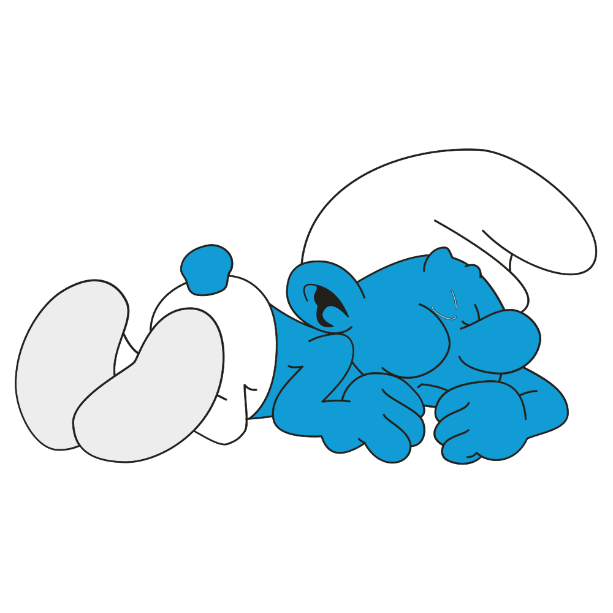
Šmoulí Bingo
Ahoj Šmoulo! Tvým úkolem je najít někoho, na koho platí tvrzení v tabulce, a získat jeho podpis.
Každý se ti může na kartu podepsat pouze jednou. Podpisy získávej od dětí, které nejsou ve stejné šestce jako ty. Zkus oslovit někoho, koho vůbec neznáš.
| Zná názvy alespoň 5 souhvězdí | Má rovnátka | Umí anglicky | Zná hlavní město Slovenska | Má doma psa |
| Umí rozdělat oheň | Umí pískat na prsty | Chodí do 5. třídy | Umí postavit stan | Umí udělat dřep na jedné noze |
| Nosí u sebe nožík | Baví ho/ji matematika | Zná skautskou hymnu | Chodí na florbal | Rád/a kreslí |
| Ví, kdo byl Baden-Powell | Už někdy ztratil/a klíče | Pije nejradši čistou vodu | Je jedináček | Spal/a už pod širákem |
| Má staršího bratra | Umí morseovku | Hraje Roblox | Umí udělat hvězdu | Narodil/a se v létě |
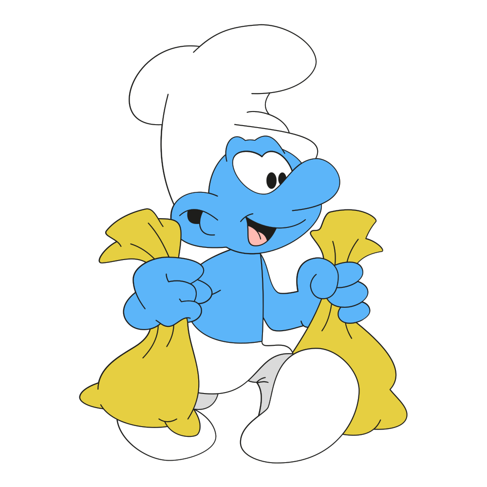
Šmoulí Bingo
Ahoj Šmoulo! Tvým úkolem je najít někoho, na koho platí tvrzení v tabulce, a získat jeho podpis.
Každý se ti může na kartu podepsat pouze jednou. Podpisy získávej od dětí, které nejsou ve stejné šestce jako ty. Zkus oslovit někoho, koho vůbec neznáš.
| Má rád/a deskovky | Má rád/a rajskou omáčku | Umí postavit stan | Má modré oči | Zná názvy alespoň 5 souhvězdí |
| Jel/a někdy na vodě v lodi | Má doma křečka nebo morče | Umí lyžovat | Má na kroji víc než 3 odborky/vlčky | Nesnáší koprovku |
| Sleduje Marvel filmy | Chodí do skautu déle než 2 roky | Nebojí se tmy | Dosáhne si jazykem na nos | Má rád/a Star Wars |
| Umí pískat na stéblo trávy | Hraje závodně nějaký sport | Nosí brýle | Chodí do 3. třídy | Hraje Minecraft |
| Je levák | Hraje Roblox | Chodí na florbal | Umí ambulantní uzel | Sbírá pokémony |
Šmoulí Bingo
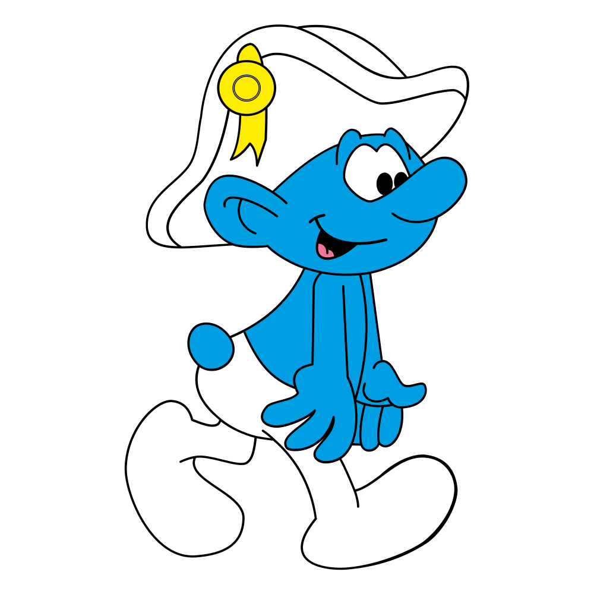
Ahoj Šmoulo! Tvým úkolem je najít někoho, na koho platí tvrzení v tabulce, a získat jeho podpis.
Každý se ti může na kartu podepsat pouze jednou. Podpisy získávej od dětí, které nejsou ve stejné šestce jako ty. Zkus oslovit někoho, koho vůbec neznáš.
| Už někdy ztratil/a klíče | Má na sobě něco zeleného | Má rád/a deskovky | Umí plavat kraula | Má mladší sestru |
| Pije nejradši čistou vodu | Umí udělat dřep na jedné noze | Umí udělat kotrmelec vzad | Chodí na florbal | Nosí brýle |
| Má modré oči | Má tento měsíc narozeniny nebo svátek | Hraje závodně nějaký sport | Miluje zmrzlinu | Bojí se pavouků |
| Umí pískat na stéblo trávy | Miluje pizzu | Chová rybičky | Chodí do skautu déle než 2 roky | Má rád/a sushi |
| Umí lyžovat | Jel/a někdy na vodě v lodi | Nebojí se tmy | Má rovnátka | Hraje Minecraft |
Ahoj Šmoulo! Tvým úkolem je najít někoho, na koho platí tvrzení v tabulce, a získat jeho podpis.
Každý se ti může na kartu podepsat pouze jednou. Podpisy získávej od dětí, které nejsou ve stejné šestce jako ty. Zkus oslovit někoho, koho vůbec neznáš.
| Baví ho/ji dějepis | Těší se do školy | Má rád/a rajskou omáčku | Už někdy ztratil/a klíče | Umí pískat na prsty |
| Zná skautskou hymnu | Nosí brýle | Spal/a už pod širákem | Chodí do skautu déle než 2 roky | Hraje Roblox |
| Jel/a někdy na vodě v lodi | Nesnáší koprovku | Umí morseovku | Zná hlavní město Slovenska | Umí uvázat dračí smyčku |
| Má více než 2 sourozence | Sbírá pokémony | Umí postavit stan | Pije nejradši čistou vodu | Hraje na hudební nástroj |
| Nebojí se tmy | Umí složit vlaštovku z papíru | Umí udělat dřep na jedné noze | Chodí do 4. třídy | Má doma psa |
Ahoj Šmoulo! Tvým úkolem je najít někoho, na koho platí tvrzení v tabulce, a získat jeho podpis.
Každý se ti může na kartu podepsat pouze jednou. Podpisy získávej od dětí, které nejsou ve stejné šestce jako ty. Zkus oslovit někoho, koho vůbec neznáš.
| Umí udělat hvězdu | Chová rybičky | Nosí brýle | Má na sobě něco červeného | Má rád/a deskovky |
| Chodí na florbal | Miluje pizzu | Má modré oči | Narodil/a se v zimě | Těší se do školy |
| Má rád/a sushi | Má doma křečka nebo morče | Umí pískat na prsty | Má tento měsíc narozeniny nebo svátek | Umí postavit stan |
| Chodí do 3. třídy | Baví ho/ji matematika | Bojí se pavouků | Nejí houby | Měl/a někdy zlomenou ruku nebo nohu |
| Rád/a tancuje | Umí morseovku | Umí jezdit na snowboardu | Chodí do 5. třídy | Hraje na hudební nástroj |
Šmoulí Bingo
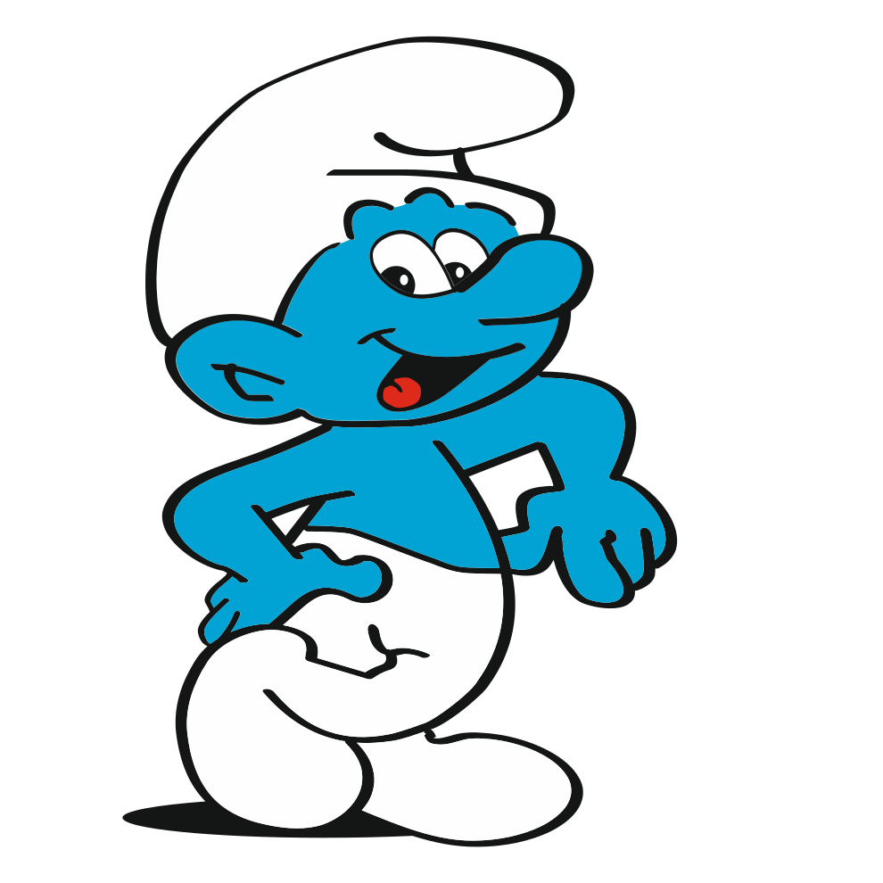
Ahoj Šmoulo! Tvým úkolem je najít někoho, na koho platí tvrzení v tabulce, a získat jeho podpis.
Každý se ti může na kartu podepsat pouze jednou. Podpisy získávej od dětí, které nejsou ve stejné šestce jako ty. Zkus oslovit někoho, koho vůbec neznáš.
| Má doma křečka nebo morče | Spal/a už pod širákem | Ví, kdo byl Baden-Powell | Nebojí se tmy | Hraje na hudební nástroj |
| Chodí na fotbal | Hraje Roblox | Má rovnátka | Umí jezdit na snowboardu | Umí lyžovat |
| Má staršího bratra | Narodil/a se v zimě | Chodí do 5. třídy | Umí jezdit na koni | Rád/a kreslí |
| Má modré oči | Chodí do 3. třídy | Má rád/a Star Wars | Pozná dub od buku | Umí udělat hvězdu |
| Nesnáší koprovku | Má rád/a deskovky | Miluje zmrzlinu | Umí pískat na prsty | Má na kroji víc než 3 odborky/vlčky |
Ahoj Šmoulo! Tvým úkolem je najít někoho, na koho platí tvrzení v tabulce, a získat jeho podpis.
Každý se ti může na kartu podepsat pouze jednou. Podpisy získávej od dětí, které nejsou ve stejné šestce jako ty. Zkus oslovit někoho, koho vůbec neznáš.
| Baví ho/ji dějepis | Má rovnátka | Nosí brýle | Baví ho/ji matematika | Měl/a někdy zlomenou ruku nebo nohu |
| Umí udělat hvězdu | Má na sobě něco červeného | Má staršího bratra | Umí složit vlaštovku z papíru | Chodí na florbal |
| Umí morseovku | Umí anglicky | Miluje zmrzlinu | Umí lyžovat | Těší se do školy |
| Chodí do 5. třídy | Umí upéct buchtu | Umí pískat na stéblo trávy | Umí jezdit na snowboardu | Hraje závodně nějaký sport |
| Pije nejradši čistou vodu | Rád/a kreslí | Nebojí se tmy | Zná skautskou hymnu | Spal/a už pod širákem |
Šmoulí Bingo
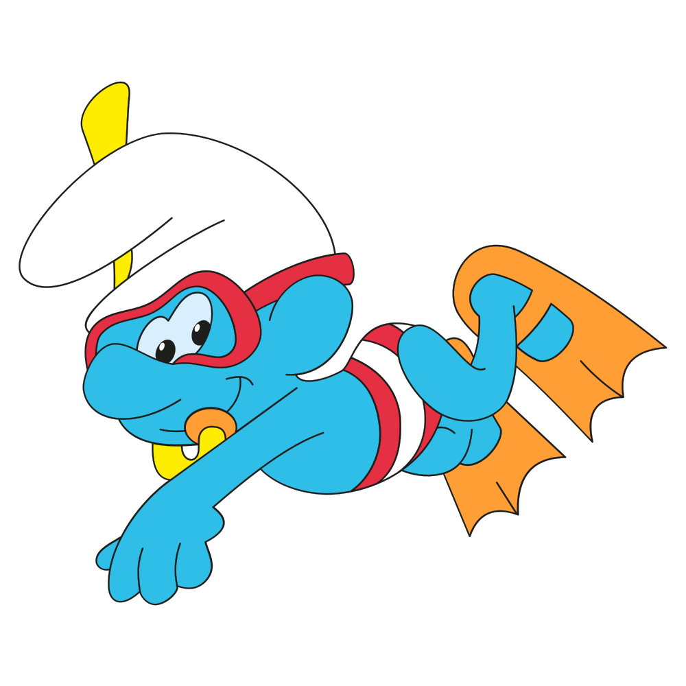
Ahoj Šmoulo! Tvým úkolem je najít někoho, na koho platí tvrzení v tabulce, a získat jeho podpis.
Každý se ti může na kartu podepsat pouze jednou. Podpisy získávej od dětí, které nejsou ve stejné šestce jako ty. Zkus oslovit někoho, koho vůbec neznáš.
| Má staršího bratra | Chodí do 3. třídy | Sleduje Marvel filmy | Má doma psa | Rád/a čte knížky |
| Nosí brýle | Baví ho/ji dějepis | Baví ho/ji matematika | Má rád/a sushi | Hraje Roblox |
| Má rád/a deskovky | Umí rozdělat oheň | Umí pískat na prsty | Narodil/a se v zimě | Umí anglicky |
| Pije nejradši čistou vodu | Umí morseovku | Má rád/a rajskou omáčku | Narodil/a se v létě | Má více než 2 sourozence |
| Zná hlavní město Slovenska | Má mladší sestru | Chodí do 4. třídy | Jel/a někdy na vodě v lodi | Nosí u sebe nožík |
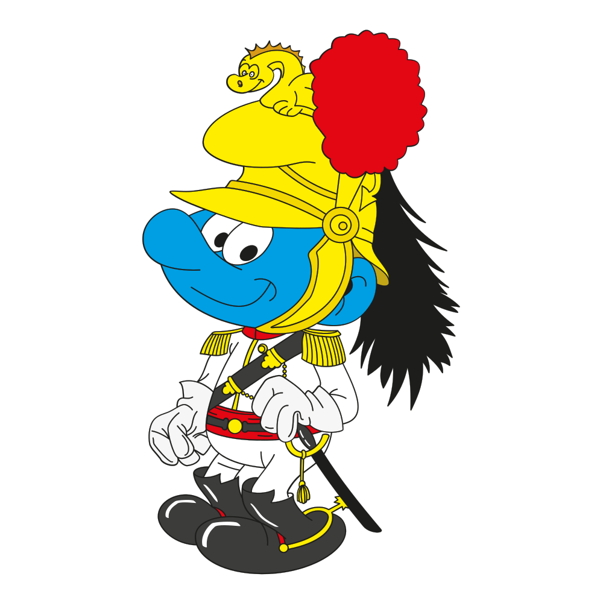
Šmoulí Bingo
Ahoj Šmoulo! Tvým úkolem je najít někoho, na koho platí tvrzení v tabulce, a získat jeho podpis.
Každý se ti může na kartu podepsat pouze jednou. Podpisy získávej od dětí, které nejsou ve stejné šestce jako ty. Zkus oslovit někoho, koho vůbec neznáš.
| Narodil/a se v zimě | Bojí se pavouků | Má rád/a deskovky | Hraje Minecraft | Má staršího bratra |
| Umí udělat kotrmelec vzad | Cestoval/a někdy letadlem | Má doma kočku | Má tento měsíc narozeniny nebo svátek | Baví ho/ji dějepis |
| Má mladší sestru | Má hnědé oči | Už někdy ztratil/a klíče | Těší se do školy | Má rovnátka |
| Hraje závodně nějaký sport | Umí pískat na stéblo trávy | Pozná dub od buku | Nosí u sebe nožík | Umí pískat na prsty |
| Umí anglicky | Rád/a tancuje | Umí udělat dřep na jedné noze | Má u sebe KPZ | Má rád/a sushi |
Šmoulí Bingo
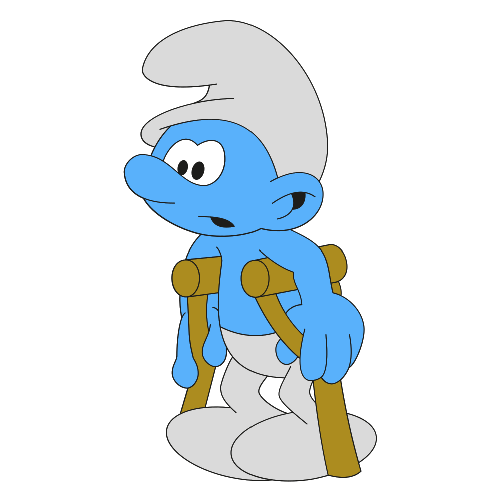
Ahoj Šmoulo! Tvým úkolem je najít někoho, na koho platí tvrzení v tabulce, a získat jeho podpis.
Každý se ti může na kartu podepsat pouze jednou. Podpisy získávej od dětí, které nejsou ve stejné šestce jako ty. Zkus oslovit někoho, koho vůbec neznáš.
| Baví ho/ji dějepis | Je jedináček | Miluje pizzu | Umí složit vlaštovku z papíru | Umí lyžovat |
| Dosáhne si jazykem na nos | Narodil/a se v létě | Má doma křečka nebo morče | Těší se do školy | Má rád/a deskovky |
| Zná skautskou hymnu | Nosí u sebe nožík | Vyhrál/a nějakou medaili | Umí pískat na prsty | Měl/a někdy zlomenou ruku nebo nohu |
| Chová rybičky | Umí rozdělat oheň | Má na sobě něco zeleného | Miluje zmrzlinu | Má staršího bratra |
| Rád/a tancuje | Narodil/a se v zimě | Má rád/a Star Wars | Rád/a kreslí | Chodí na fotbal |
Ahoj Šmoulo! Tvým úkolem je najít někoho, na koho platí tvrzení v tabulce, a získat jeho podpis.
Každý se ti může na kartu podepsat pouze jednou. Podpisy získávej od dětí, které nejsou ve stejné šestce jako ty. Zkus oslovit někoho, koho vůbec neznáš.
| Pozná dub od buku | Nebojí se tmy | Nejí houby | Nosí brýle | Umí udělat hvězdu |
| Chodí do skautu déle než 2 roky | Má staršího bratra | Ví, kdo byl Baden-Powell | Má doma křečka nebo morče | Hraje Roblox |
| Umí jezdit na koni | Narodil/a se v zimě | Má hnědé oči | Má doma psa | Nosí u sebe nožík |
| Umí morseovku | Má rád/a deskovky | Dosáhne si jazykem na nos | Byl/a někdy u moře | Má modré oči |
| Těší se do školy | Cestoval/a někdy letadlem | Sbírá pokémony | Umí udělat kotrmelec vzad | Baví ho/ji dějepis |
Šmoulí Bingo
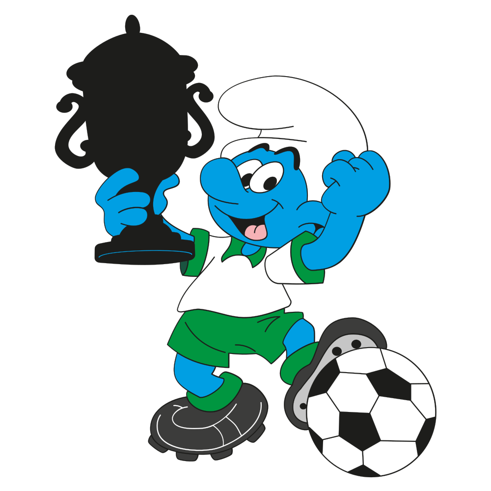
Ahoj Šmoulo! Tvým úkolem je najít někoho, na koho platí tvrzení v tabulce, a získat jeho podpis.
Každý se ti může na kartu podepsat pouze jednou. Podpisy získávej od dětí, které nejsou ve stejné šestce jako ty. Zkus oslovit někoho, koho vůbec neznáš.
| Chodí do 4. třídy | Hraje Roblox | Chová rybičky | Zná skautskou hymnu | Umí uvařit čaj |
| Má rád/a rajskou omáčku | Spal/a už pod širákem | Umí lyžovat | Hraje závodně nějaký sport | Umí ambulantní uzel |
| Umí rozdělat oheň | Má na sobě něco zeleného | Umí udělat dřep na jedné noze | Nebojí se tmy | Zná názvy alespoň 5 souhvězdí |
| Vyhrál/a nějakou medaili | Umí anglicky | Rád/a čte knížky | Bojí se pavouků | Má rovnátka |
| Má hnědé oči | Má více než 2 sourozence | Je levák | Zná hlavní město Slovenska | Dosáhne si jazykem na nos |
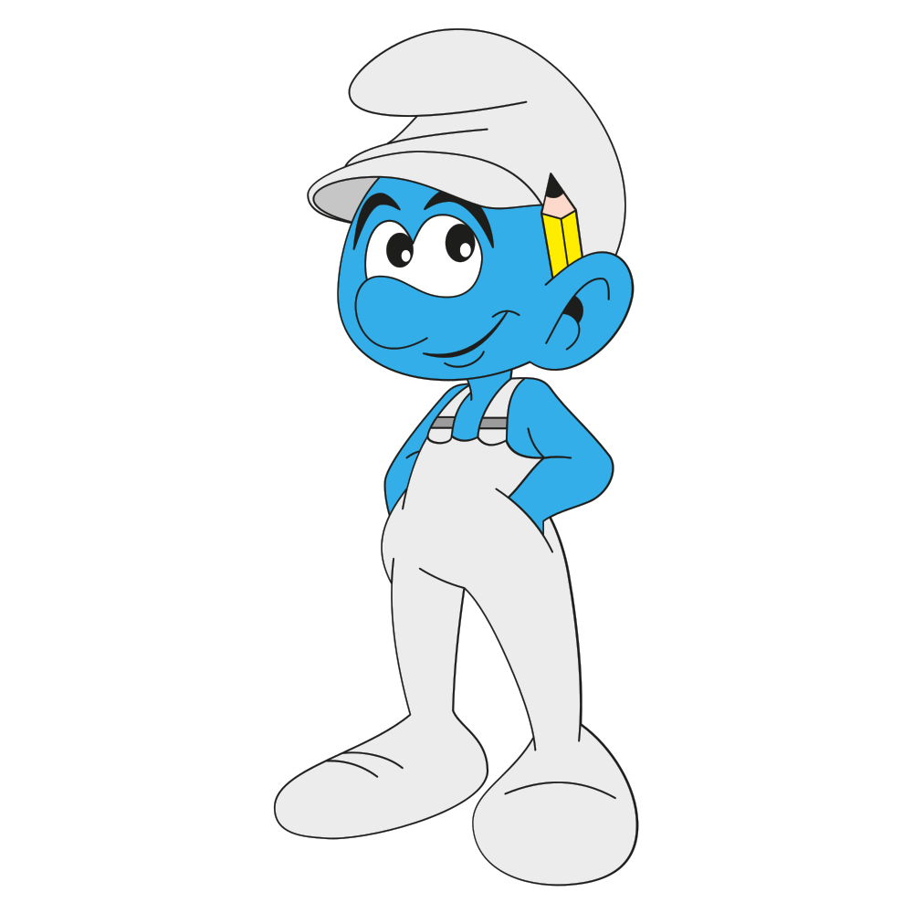
Šmoulí Bingo
Ahoj Šmoulo! Tvým úkolem je najít někoho, na koho platí tvrzení v tabulce, a získat jeho podpis.
Každý se ti může na kartu podepsat pouze jednou. Podpisy získávej od dětí, které nejsou ve stejné šestce jako ty. Zkus oslovit někoho, koho vůbec neznáš.
| Narodil/a se v zimě | Zná hlavní město Slovenska | Nosí u sebe nožík | Umí udělat kotrmelec vzad | Má staršího bratra |
| Baví ho/ji dějepis | Má doma kočku | Pije nejradši čistou vodu | Umí upéct buchtu | Chodí do 4. třídy |
| Má rád/a sushi | Má rád/a rajskou omáčku | Umí morseovku | Dosáhne si jazykem na nos | Miluje zmrzlinu |
| Zná skautskou hymnu | Nesnáší koprovku | Těší se do školy | Narodil/a se v létě | Má více než 2 sourozence |
| Chodí na florbal | Sbírá pokémony | Hraje Minecraft | Umí složit vlaštovku z papíru | Rád/a kreslí |
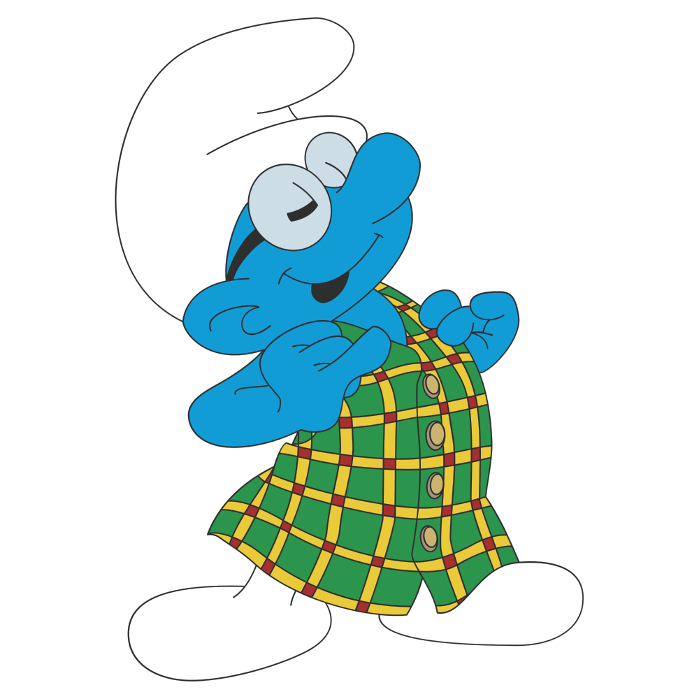
Šmoulí Bingo
Ahoj Šmoulo! Tvým úkolem je najít někoho, na koho platí tvrzení v tabulce, a získat jeho podpis.
Každý se ti může na kartu podepsat pouze jednou. Podpisy získávej od dětí, které nejsou ve stejné šestce jako ty. Zkus oslovit někoho, koho vůbec neznáš.
| Má rád/a rajskou omáčku | Má na sobě něco červeného | Hraje na hudební nástroj | Má hnědé oči | Cestoval/a někdy letadlem |
| Nebojí se tmy | Miluje zmrzlinu | Hraje závodně nějaký sport | Umí upéct buchtu | Umí uvařit čaj |
| Je jedináček | Byl/a někdy u moře | Vyhrál/a nějakou medaili | Má na sobě něco zeleného | Má mladší sestru |
| Rád/a čte knížky | Umí jezdit na snowboardu | Umí složit vlaštovku z papíru | Narodil/a se v létě | Baví ho/ji dějepis |
| Dosáhne si jazykem na nos | Umí udělat dřep na jedné noze | Umí uvázat dračí smyčku | Umí anglicky | Chodí na fotbal |
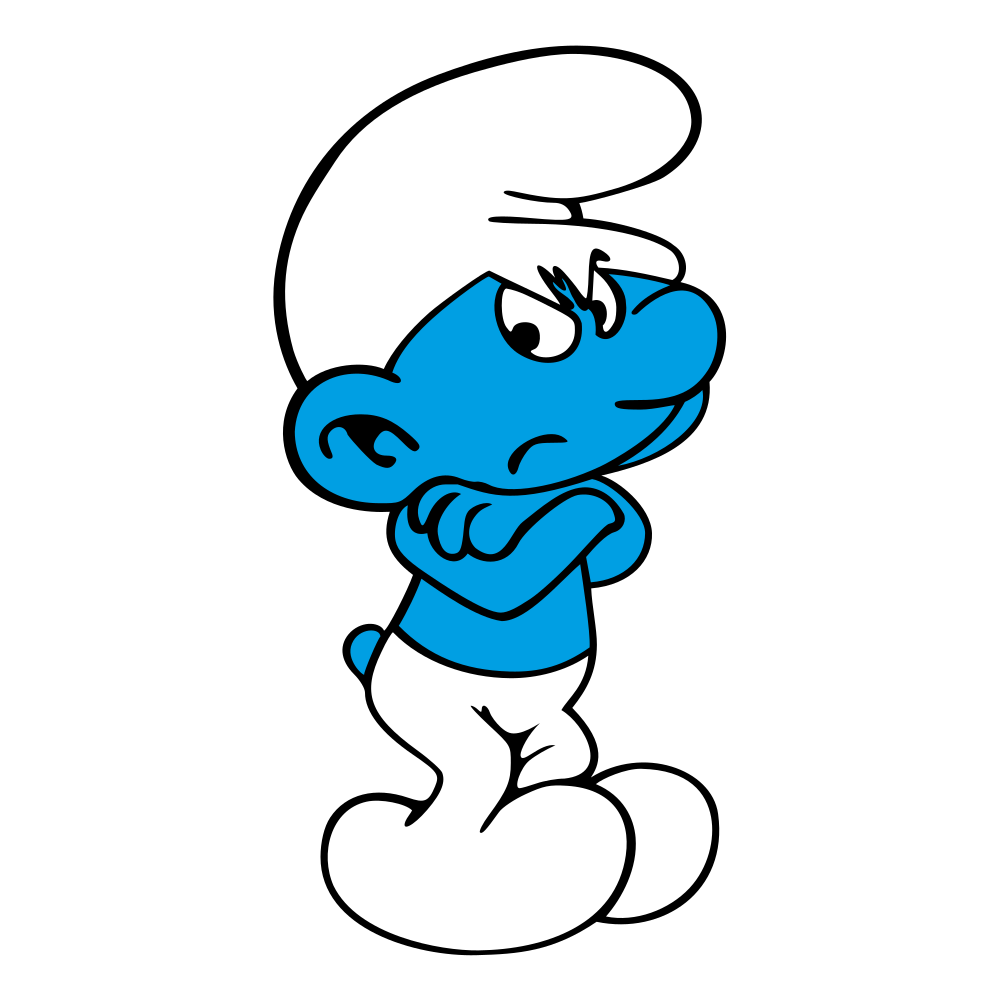
Šmoulí Bingo
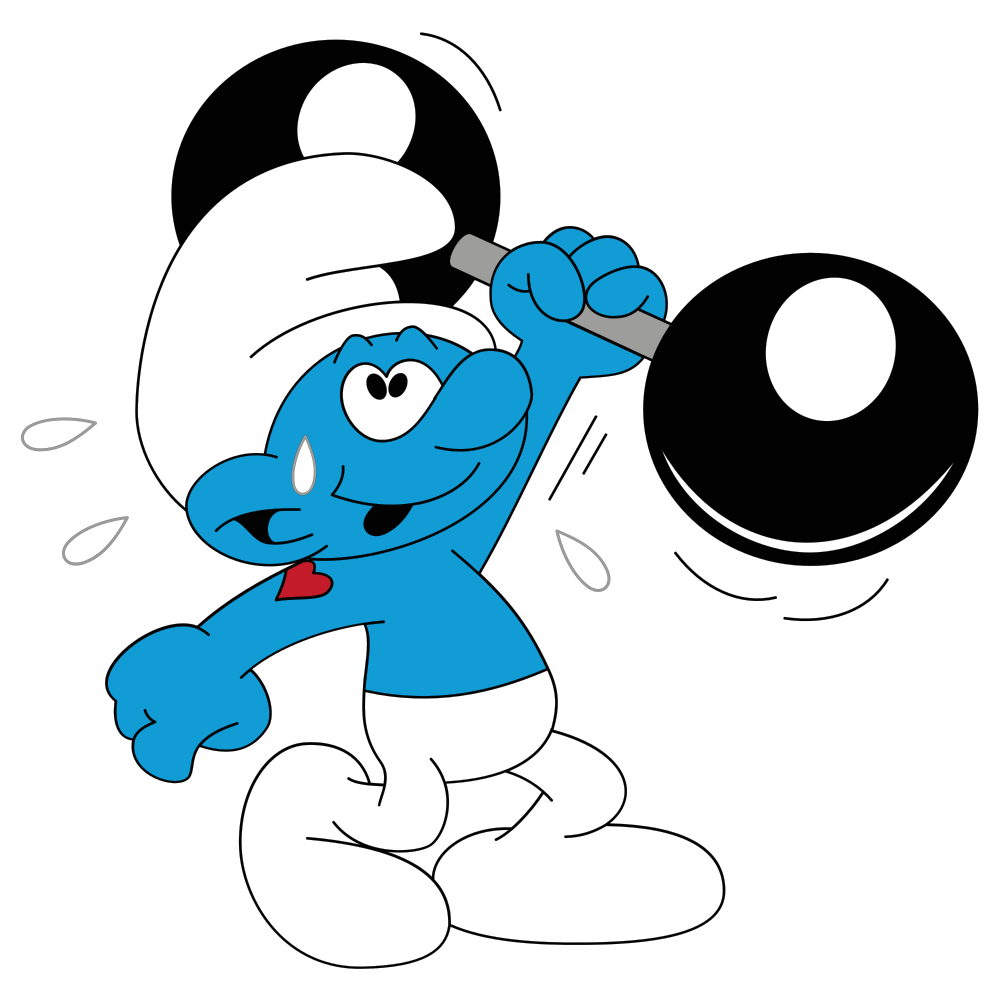
Ahoj Šmoulo! Tvým úkolem je najít někoho, na koho platí tvrzení v tabulce, a získat jeho podpis.
Každý se ti může na kartu podepsat pouze jednou. Podpisy získávej od dětí, které nejsou ve stejné šestce jako ty. Zkus oslovit někoho, koho vůbec neznáš.
| Má staršího bratra | Umí pískat na stéblo trávy | Umí morseovku | Pozná dub od buku | Sleduje Marvel filmy |
| Narodil/a se v létě | Umí udělat kotrmelec vzad | Chodí do 5. třídy | Chodí do 3. třídy | Cestoval/a někdy letadlem |
| Má rád/a deskovky | Těší se do školy | Už někdy ztratil/a klíče | Umí plavat kraula | Má modré oči |
| Zná hlavní město Slovenska | Má doma psa | Umí složit vlaštovku z papíru | Je levák | Má u sebe KPZ |
| Nebojí se tmy | Umí upéct buchtu | Umí udělat dřep na jedné noze | Umí uvařit čaj | Má doma kočku |
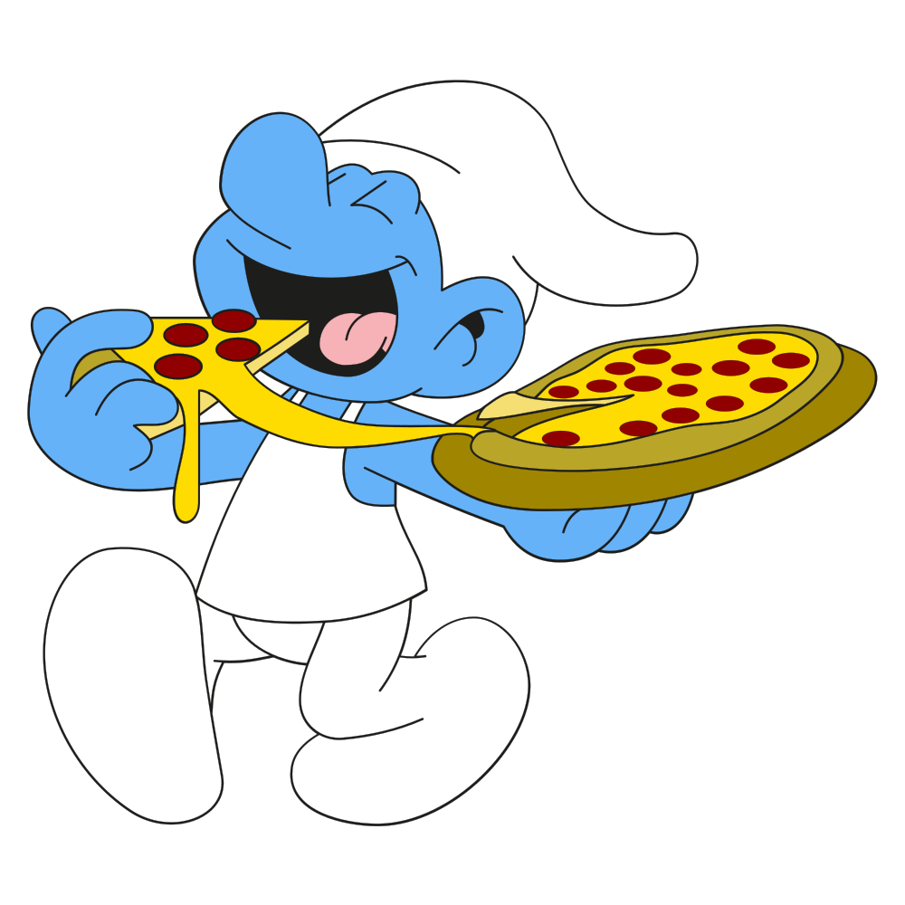
Šmoulí Bingo
Ahoj Šmoulo! Tvým úkolem je najít někoho, na koho platí tvrzení v tabulce, a získat jeho podpis.
Každý se ti může na kartu podepsat pouze jednou. Podpisy získávej od dětí, které nejsou ve stejné šestce jako ty. Zkus oslovit někoho, koho vůbec neznáš.
| Pije nejradši čistou vodu | Bojí se pavouků | Je levák | Rád/a kreslí | Umí postavit stan |
| Umí uvázat dračí smyčku | Sleduje Marvel filmy | Umí plavat kraula | Dosáhne si jazykem na nos | Hraje Minecraft |
| Měl/a někdy zlomenou ruku nebo nohu | Umí pískat na prsty | Spal/a už pod širákem | Umí uvařit čaj | Chodí do 5. třídy |
| Nebojí se tmy | Má rád/a Star Wars | Umí rozdělat oheň | Baví ho/ji matematika | Má rovnátka |
| Má tento měsíc narozeniny nebo svátek | Rád/a tancuje | Zná skautskou hymnu | Nesnáší koprovku | Umí složit vlaštovku z papíru |
Ahoj Šmoulo! Tvým úkolem je najít někoho, na koho platí tvrzení v tabulce, a získat jeho podpis.
Každý se ti může na kartu podepsat pouze jednou. Podpisy získávej od dětí, které nejsou ve stejné šestce jako ty. Zkus oslovit někoho, koho vůbec neznáš.
| Umí plavat kraula | Umí jezdit na snowboardu | Umí složit vlaštovku z papíru | Zná skautskou hymnu | Sleduje Marvel filmy |
| Baví ho/ji dějepis | Jel/a někdy na vodě v lodi | Cestoval/a někdy letadlem | Hraje Minecraft | Byl/a někdy u moře |
| Má doma psa | Umí pískat na prsty | Má doma kočku | Umí morseovku | Umí jezdit na koni |
| Měl/a někdy zlomenou ruku nebo nohu | Umí udělat hvězdu | Umí postavit stan | Umí lyžovat | Hraje závodně nějaký sport |
| Umí udělat dřep na jedné noze | Má rád/a sushi | Umí upéct buchtu | Pije nejradši čistou vodu | Rád/a kreslí |
Ahoj Šmoulo! Tvým úkolem je najít někoho, na koho platí tvrzení v tabulce, a získat jeho podpis.
Každý se ti může na kartu podepsat pouze jednou. Podpisy získávej od dětí, které nejsou ve stejné šestce jako ty. Zkus oslovit někoho, koho vůbec neznáš.
| Chodí do 3. třídy | Sbírá pokémony | Má doma křečka nebo morče | Umí upéct buchtu | Sleduje Marvel filmy |
| Těší se do školy | Chodí na florbal | Umí ambulantní uzel | Měl/a někdy zlomenou ruku nebo nohu | Má u sebe KPZ |
| Umí udělat kotrmelec vzad | Nosí brýle | Umí rozdělat oheň | Má rád/a sushi | Chodí do 5. třídy |
| Má rád/a deskovky | Je jedináček | Nesnáší koprovku | Cestoval/a někdy letadlem | Byl/a někdy u moře |
| Pije nejradši čistou vodu | Jel/a někdy na vodě v lodi | Chodí na fotbal | Narodil/a se v zimě | Má hnědé oči |
Ahoj Šmoulo! Tvým úkolem je najít někoho, na koho platí tvrzení v tabulce, a získat jeho podpis.
Každý se ti může na kartu podepsat pouze jednou. Podpisy získávej od dětí, které nejsou ve stejné šestce jako ty. Zkus oslovit někoho, koho vůbec neznáš.
| Hraje Roblox | Umí udělat hvězdu | Už někdy ztratil/a klíče | Jel/a někdy na vodě v lodi | Umí jezdit na snowboardu |
| Miluje zmrzlinu | Nosí brýle | Má modré oči | Byl/a někdy u moře | Má rovnátka |
| Má rád/a deskovky | Je levák | Měl/a někdy zlomenou ruku nebo nohu | Narodil/a se v létě | Baví ho/ji dějepis |
| Hraje na hudební nástroj | Umí morseovku | Těší se do školy | Umí uvázat dračí smyčku | Pije nejradši čistou vodu |
| Umí lyžovat | Má rád/a sushi | Zná skautskou hymnu | Sleduje Marvel filmy | Umí rozdělat oheň |
Ahoj Šmoulo! Tvým úkolem je najít někoho, na koho platí tvrzení v tabulce, a získat jeho podpis.
Každý se ti může na kartu podepsat pouze jednou. Podpisy získávej od dětí, které nejsou ve stejné šestce jako ty. Zkus oslovit někoho, koho vůbec neznáš.
| Umí jezdit na snowboardu | Umí upéct buchtu | Umí pískat na stéblo trávy | Hraje Minecraft | Nebojí se tmy |
| Pije nejradši čistou vodu | Hraje Roblox | Umí udělat kotrmelec vzad | Má více než 2 sourozence | Umí lyžovat |
| Ví, kdo byl Baden-Powell | Má doma křečka nebo morče | Bojí se pavouků | Umí jezdit na koni | Má mladší sestru |
| Chodí do 5. třídy | Má modré oči | Cestoval/a někdy letadlem | Měl/a někdy zlomenou ruku nebo nohu | Jel/a někdy na vodě v lodi |
| Umí udělat hvězdu | Má rovnátka | Umí anglicky | Nosí u sebe nožík | Hraje závodně nějaký sport |
Ahoj Šmoulo! Tvým úkolem je najít někoho, na koho platí tvrzení v tabulce, a získat jeho podpis.
Každý se ti může na kartu podepsat pouze jednou. Podpisy získávej od dětí, které nejsou ve stejné šestce jako ty. Zkus oslovit někoho, koho vůbec neznáš.
| Má více než 2 sourozence | Vyhrál/a nějakou medaili | Umí uvázat dračí smyčku | Už někdy ztratil/a klíče | Má mladší sestru |
| Miluje pizzu | Chodí do skautu déle než 2 roky | Rád/a tancuje | Umí udělat hvězdu | Má na sobě něco červeného |
| Je levák | Chodí na fotbal | Hraje závodně nějaký sport | Umí složit vlaštovku z papíru | Umí jezdit na koni |
| Má na kroji víc než 3 odborky/vlčky | Má doma psa | Má na sobě něco zeleného | Umí pískat na stéblo trávy | Dosáhne si jazykem na nos |
| Umí lyžovat | Umí udělat kotrmelec vzad | Nesnáší koprovku | Rád/a čte knížky | Narodil/a se v zimě |
Ahoj Šmoulo! Tvým úkolem je najít někoho, na koho platí tvrzení v tabulce, a získat jeho podpis.
Každý se ti může na kartu podepsat pouze jednou. Podpisy získávej od dětí, které nejsou ve stejné šestce jako ty. Zkus oslovit někoho, koho vůbec neznáš.
| Pije nejradši čistou vodu | Má modré oči | Má rovnátka | Rád/a tancuje | Chodí do 3. třídy |
| Už někdy ztratil/a klíče | Jel/a někdy na vodě v lodi | Je jedináček | Je levák | Má více než 2 sourozence |
| Nosí brýle | Umí lyžovat | Dosáhne si jazykem na nos | Umí pískat na prsty | Nejí houby |
| Byl/a někdy u moře | Umí rozdělat oheň | Umí uvázat dračí smyčku | Umí plavat kraula | Má hnědé oči |
| Rád/a čte knížky | Zná skautskou hymnu | Baví ho/ji dějepis | Má rád/a Star Wars | Má rád/a rajskou omáčku |
Ahoj Šmoulo! Tvým úkolem je najít někoho, na koho platí tvrzení v tabulce, a získat jeho podpis.
Každý se ti může na kartu podepsat pouze jednou. Podpisy získávej od dětí, které nejsou ve stejné šestce jako ty. Zkus oslovit někoho, koho vůbec neznáš.
| Byl/a někdy u moře | Má mladší sestru | Umí anglicky | Má více než 2 sourozence | Dosáhne si jazykem na nos |
| Umí složit vlaštovku z papíru | Pozná dub od buku | Chodí do skautu déle než 2 roky | Umí udělat hvězdu | Bojí se pavouků |
| Má rád/a rajskou omáčku | Umí lyžovat | Má na kroji víc než 3 odborky/vlčky | Hraje Minecraft | Miluje pizzu |
| Narodil/a se v létě | Umí jezdit na koni | Zná hlavní město Slovenska | Nosí u sebe nožík | Těší se do školy |
| Narodil/a se v zimě | Zná názvy alespoň 5 souhvězdí | Umí postavit stan | Hraje na hudební nástroj | Nosí brýle |
Ahoj Šmoulo! Tvým úkolem je najít někoho, na koho platí tvrzení v tabulce, a získat jeho podpis.
Každý se ti může na kartu podepsat pouze jednou. Podpisy získávej od dětí, které nejsou ve stejné šestce jako ty. Zkus oslovit někoho, koho vůbec neznáš.
| Má hnědé oči | Sleduje Marvel filmy | Už někdy ztratil/a klíče | Umí lyžovat | Rád/a čte knížky |
| Pozná dub od buku | Umí jezdit na koni | Umí postavit stan | Nosí u sebe nožík | Má mladší sestru |
| Baví ho/ji matematika | Pije nejradši čistou vodu | Spal/a už pod širákem | Má rovnátka | Nejí houby |
| Má u sebe KPZ | Umí ambulantní uzel | Umí rozdělat oheň | Rád/a tancuje | Byl/a někdy u moře |
| Miluje zmrzlinu | Má staršího bratra | Zná hlavní město Slovenska | Má rád/a Star Wars | Chodí na florbal |
Ahoj Šmoulo! Tvým úkolem je najít někoho, na koho platí tvrzení v tabulce, a získat jeho podpis.
Každý se ti může na kartu podepsat pouze jednou. Podpisy získávej od dětí, které nejsou ve stejné šestce jako ty. Zkus oslovit někoho, koho vůbec neznáš.
| Rád/a tancuje | Umí lyžovat | Sleduje Marvel filmy | Umí uvařit čaj | Umí udělat hvězdu |
| Umí plavat kraula | Chová rybičky | Má doma psa | Má rovnátka | Chodí do 3. třídy |
| Bojí se pavouků | Zná názvy alespoň 5 souhvězdí | Zná hlavní město Slovenska | Umí pískat na stéblo trávy | Nejí houby |
| Baví ho/ji matematika | Ví, kdo byl Baden-Powell | Hraje Minecraft | Umí rozdělat oheň | Chodí do 5. třídy |
| Sbírá pokémony | Jel/a někdy na vodě v lodi | Umí pískat na prsty | Byl/a někdy u moře | Už někdy ztratil/a klíče |
Ahoj Šmoulo! Tvým úkolem je najít někoho, na koho platí tvrzení v tabulce, a získat jeho podpis.
Každý se ti může na kartu podepsat pouze jednou. Podpisy získávej od dětí, které nejsou ve stejné šestce jako ty. Zkus oslovit někoho, koho vůbec neznáš.
| Vyhrál/a nějakou medaili | Umí jezdit na koni | Má hnědé oči | Rád/a čte knížky | Jel/a někdy na vodě v lodi |
| Umí postavit stan | Byl/a někdy u moře | Rád/a kreslí | Těší se do školy | Umí pískat na prsty |
| Nosí brýle | Má staršího bratra | Baví ho/ji matematika | Má na sobě něco červeného | Je levák |
| Umí udělat hvězdu | Má na sobě něco zeleného | Má u sebe KPZ | Ví, kdo byl Baden-Powell | Má tento měsíc narozeniny nebo svátek |
| Má rád/a deskovky | Umí pískat na stéblo trávy | Pije nejradši čistou vodu | Má rovnátka | Spal/a už pod širákem |
Ahoj Šmoulo! Tvým úkolem je najít někoho, na koho platí tvrzení v tabulce, a získat jeho podpis.
Každý se ti může na kartu podepsat pouze jednou. Podpisy získávej od dětí, které nejsou ve stejné šestce jako ty. Zkus oslovit někoho, koho vůbec neznáš.
| Miluje pizzu | Nosí u sebe nožík | Hraje na hudební nástroj | Má tento měsíc narozeniny nebo svátek | Rád/a tancuje |
| Umí jezdit na koni | Má rád/a rajskou omáčku | Sleduje Marvel filmy | Ví, kdo byl Baden-Powell | Má rád/a Star Wars |
| Má doma kočku | Je jedináček | Umí upéct buchtu | Umí složit vlaštovku z papíru | Má více než 2 sourozence |
| Má na sobě něco zeleného | Umí plavat kraula | Umí jezdit na snowboardu | Umí udělat kotrmelec vzad | Umí udělat dřep na jedné noze |
| Má staršího bratra | Chodí do 3. třídy | Umí lyžovat | Měl/a někdy zlomenou ruku nebo nohu | Chodí na florbal |
Ahoj Šmoulo! Tvým úkolem je najít někoho, na koho platí tvrzení v tabulce, a získat jeho podpis.
Každý se ti může na kartu podepsat pouze jednou. Podpisy získávej od dětí, které nejsou ve stejné šestce jako ty. Zkus oslovit někoho, koho vůbec neznáš.
| Nebojí se tmy | Má doma psa | Těší se do školy | Umí udělat dřep na jedné noze | Má doma kočku |
| Miluje pizzu | Umí upéct buchtu | Spal/a už pod širákem | Má staršího bratra | Měl/a někdy zlomenou ruku nebo nohu |
| Má více než 2 sourozence | Umí jezdit na snowboardu | Má doma křečka nebo morče | Baví ho/ji dějepis | Chodí do skautu déle než 2 roky |
| Umí udělat hvězdu | Hraje na hudební nástroj | Ví, kdo byl Baden-Powell | Zná skautskou hymnu | Má mladší sestru |
| Umí uvařit čaj | Chová rybičky | Miluje zmrzlinu | Bojí se pavouků | Má u sebe KPZ |
Ahoj Šmoulo! Tvým úkolem je najít někoho, na koho platí tvrzení v tabulce, a získat jeho podpis.
Každý se ti může na kartu podepsat pouze jednou. Podpisy získávej od dětí, které nejsou ve stejné šestce jako ty. Zkus oslovit někoho, koho vůbec neznáš.
| Nebojí se tmy | Má doma kočku | Už někdy ztratil/a klíče | Ví, kdo byl Baden-Powell | Umí upéct buchtu |
| Spal/a už pod širákem | Rád/a čte knížky | Má u sebe KPZ | Jel/a někdy na vodě v lodi | Těší se do školy |
| Umí rozdělat oheň | Nosí u sebe nožík | Chová rybičky | Má mladší sestru | Sbírá pokémony |
| Narodil/a se v zimě | Zná skautskou hymnu | Miluje zmrzlinu | Pije nejradši čistou vodu | Rád/a kreslí |
| Má staršího bratra | Baví ho/ji dějepis | Dosáhne si jazykem na nos | Miluje pizzu | Hraje závodně nějaký sport |
Ahoj Šmoulo! Tvým úkolem je najít někoho, na koho platí tvrzení v tabulce, a získat jeho podpis.
Každý se ti může na kartu podepsat pouze jednou. Podpisy získávej od dětí, které nejsou ve stejné šestce jako ty. Zkus oslovit někoho, koho vůbec neznáš.
| Chodí do 4. třídy | Jel/a někdy na vodě v lodi | Má tento měsíc narozeniny nebo svátek | Chodí na fotbal | Chodí do 5. třídy |
| Umí postavit stan | Má staršího bratra | Umí anglicky | Má u sebe KPZ | Sleduje Marvel filmy |
| Bojí se pavouků | Nejí houby | Miluje zmrzlinu | Má modré oči | Umí plavat kraula |
| Nebojí se tmy | Má rád/a sushi | Má doma psa | Umí uvařit čaj | Zná skautskou hymnu |
| Zná názvy alespoň 5 souhvězdí | Chodí do 3. třídy | Baví ho/ji dějepis | Je jedináček | Umí jezdit na snowboardu |
Ahoj Šmoulo! Tvým úkolem je najít někoho, na koho platí tvrzení v tabulce, a získat jeho podpis.
Každý se ti může na kartu podepsat pouze jednou. Podpisy získávej od dětí, které nejsou ve stejné šestce jako ty. Zkus oslovit někoho, koho vůbec neznáš.
| Umí udělat dřep na jedné noze | Chodí do 3. třídy | Baví ho/ji dějepis | Umí pískat na prsty | Má rád/a deskovky |
| Má doma kočku | Má více než 2 sourozence | Chodí na florbal | Má doma křečka nebo morče | Je jedináček |
| Má hnědé oči | Umí uvařit čaj | Měl/a někdy zlomenou ruku nebo nohu | Umí rozdělat oheň | Hraje Minecraft |
| Umí udělat kotrmelec vzad | Ví, kdo byl Baden-Powell | Miluje pizzu | Hraje Roblox | Rád/a čte knížky |
| Má doma psa | Hraje závodně nějaký sport | Chodí do 5. třídy | Nebojí se tmy | Umí plavat kraula |
Ahoj Šmoulo! Tvým úkolem je najít někoho, na koho platí tvrzení v tabulce, a získat jeho podpis.
Každý se ti může na kartu podepsat pouze jednou. Podpisy získávej od dětí, které nejsou ve stejné šestce jako ty. Zkus oslovit někoho, koho vůbec neznáš.
| Má rád/a rajskou omáčku | Má staršího bratra | Má doma křečka nebo morče | Cestoval/a někdy letadlem | Umí jezdit na snowboardu |
| Má mladší sestru | Nosí u sebe nožík | Nejí houby | Umí lyžovat | Umí morseovku |
| Umí uvařit čaj | Hraje Roblox | Už někdy ztratil/a klíče | Umí udělat hvězdu | Chodí na florbal |
| Rád/a kreslí | Umí pískat na stéblo trávy | Má na sobě něco červeného | Sbírá pokémony | Chová rybičky |
| Nebojí se tmy | Nosí brýle | Bojí se pavouků | Jel/a někdy na vodě v lodi | Pije nejradši čistou vodu |
Ahoj Šmoulo! Tvým úkolem je najít někoho, na koho platí tvrzení v tabulce, a získat jeho podpis.
Každý se ti může na kartu podepsat pouze jednou. Podpisy získávej od dětí, které nejsou ve stejné šestce jako ty. Zkus oslovit někoho, koho vůbec neznáš.
| Pozná dub od buku | Umí jezdit na koni | Cestoval/a někdy letadlem | Chodí do 4. třídy | Má rovnátka |
| Nebojí se tmy | Hraje závodně nějaký sport | Pije nejradši čistou vodu | Sleduje Marvel filmy | Umí udělat hvězdu |
| Umí složit vlaštovku z papíru | Umí jezdit na snowboardu | Má na sobě něco zeleného | Chodí do 5. třídy | Umí postavit stan |
| Je levák | Jel/a někdy na vodě v lodi | Baví ho/ji dějepis | Má mladší sestru | Umí uvázat dračí smyčku |
| Umí pískat na stéblo trávy | Má doma křečka nebo morče | Má modré oči | Narodil/a se v létě | Umí udělat dřep na jedné noze |
Ahoj Šmoulo! Tvým úkolem je najít někoho, na koho platí tvrzení v tabulce, a získat jeho podpis.
Každý se ti může na kartu podepsat pouze jednou. Podpisy získávej od dětí, které nejsou ve stejné šestce jako ty. Zkus oslovit někoho, koho vůbec neznáš.
| Má rád/a deskovky | Umí upéct buchtu | Má na sobě něco zeleného | Hraje Roblox | Má doma křečka nebo morče |
| Zná skautskou hymnu | Měl/a někdy zlomenou ruku nebo nohu | Miluje pizzu | Má rovnátka | Má doma psa |
| Ví, kdo byl Baden-Powell | Umí uvařit čaj | Hraje na hudební nástroj | Cestoval/a někdy letadlem | Umí jezdit na koni |
| Zná hlavní město Slovenska | Chodí do skautu déle než 2 roky | Narodil/a se v zimě | Baví ho/ji matematika | Sbírá pokémony |
| Umí plavat kraula | Má rád/a rajskou omáčku | Umí anglicky | Umí udělat dřep na jedné noze | Je jedináček |
Ahoj Šmoulo! Tvým úkolem je najít někoho, na koho platí tvrzení v tabulce, a získat jeho podpis.
Každý se ti může na kartu podepsat pouze jednou. Podpisy získávej od dětí, které nejsou ve stejné šestce jako ty. Zkus oslovit někoho, koho vůbec neznáš.
| Těší se do školy | Hraje Minecraft | Rád/a čte knížky | Hraje na hudební nástroj | Chodí do 4. třídy |
| Má doma psa | Hraje Roblox | Nesnáší koprovku | Umí udělat hvězdu | Zná názvy alespoň 5 souhvězdí |
| Jel/a někdy na vodě v lodi | Má doma křečka nebo morče | Má rád/a deskovky | Zná hlavní město Slovenska | Má rovnátka |
| Má doma kočku | Cestoval/a někdy letadlem | Už někdy ztratil/a klíče | Nosí brýle | Umí pískat na prsty |
| Umí ambulantní uzel | Spal/a už pod širákem | Nebojí se tmy | Chodí na fotbal | Chodí na florbal |
Ahoj Šmoulo! Tvým úkolem je najít někoho, na koho platí tvrzení v tabulce, a získat jeho podpis.
Každý se ti může na kartu podepsat pouze jednou. Podpisy získávej od dětí, které nejsou ve stejné šestce jako ty. Zkus oslovit někoho, koho vůbec neznáš.
| Rád/a tancuje | Bojí se pavouků | Nejí houby | Má mladší sestru | Rád/a kreslí |
| Sbírá pokémony | Nebojí se tmy | Má modré oči | Umí složit vlaštovku z papíru | Je jedináček |
| Chodí na florbal | Chová rybičky | Umí anglicky | Umí lyžovat | Těší se do školy |
| Nosí u sebe nožík | Umí morseovku | Umí jezdit na koni | Spal/a už pod širákem | Zná názvy alespoň 5 souhvězdí |
| Narodil/a se v létě | Pije nejradši čistou vodu | Umí pískat na stéblo trávy | Nosí brýle | Umí rozdělat oheň |
Ahoj Šmoulo! Tvým úkolem je najít někoho, na koho platí tvrzení v tabulce, a získat jeho podpis.
Každý se ti může na kartu podepsat pouze jednou. Podpisy získávej od dětí, které nejsou ve stejné šestce jako ty. Zkus oslovit někoho, koho vůbec neznáš.
| Má rád/a rajskou omáčku | Umí anglicky | Umí pískat na prsty | Zná skautskou hymnu | Narodil/a se v létě |
| Spal/a už pod širákem | Nosí u sebe nožík | Umí jezdit na koni | Měl/a někdy zlomenou ruku nebo nohu | Hraje na hudební nástroj |
| Miluje zmrzlinu | Rád/a tancuje | Sbírá pokémony | Umí uvařit čaj | Narodil/a se v zimě |
| Chodí na florbal | Chodí do skautu déle než 2 roky | Umí rozdělat oheň | Nejí houby | Má u sebe KPZ |
| Má staršího bratra | Dosáhne si jazykem na nos | Chodí na fotbal | Umí plavat kraula | Cestoval/a někdy letadlem |
Ahoj Šmoulo! Tvým úkolem je najít někoho, na koho platí tvrzení v tabulce, a získat jeho podpis.
Každý se ti může na kartu podepsat pouze jednou. Podpisy získávej od dětí, které nejsou ve stejné šestce jako ty. Zkus oslovit někoho, koho vůbec neznáš.
| Miluje zmrzlinu | Chodí do 4. třídy | Chodí do 3. třídy | Nesnáší koprovku | Sleduje Marvel filmy |
| Umí udělat kotrmelec vzad | Je jedináček | Umí jezdit na snowboardu | Umí anglicky | Umí rozdělat oheň |
| Zná názvy alespoň 5 souhvězdí | Vyhrál/a nějakou medaili | Umí uvařit čaj | Hraje závodně nějaký sport | Má na kroji víc než 3 odborky/vlčky |
| Hraje Minecraft | Umí jezdit na koni | Má rád/a deskovky | Měl/a někdy zlomenou ruku nebo nohu | Má více než 2 sourozence |
| Nosí u sebe nožík | Má rovnátka | Umí udělat hvězdu | Pozná dub od buku | Má doma křečka nebo morče |
Ahoj Šmoulo! Tvým úkolem je najít někoho, na koho platí tvrzení v tabulce, a získat jeho podpis.
Každý se ti může na kartu podepsat pouze jednou. Podpisy získávej od dětí, které nejsou ve stejné šestce jako ty. Zkus oslovit někoho, koho vůbec neznáš.
| Má rád/a sushi | Hraje závodně nějaký sport | Umí pískat na prsty | Zná skautskou hymnu | Miluje zmrzlinu |
| Byl/a někdy u moře | Chodí na florbal | Miluje pizzu | Nejí houby | Zná názvy alespoň 5 souhvězdí |
| Umí jezdit na koni | Rád/a kreslí | Umí anglicky | Umí uvázat dračí smyčku | Hraje Minecraft |
| Má rovnátka | Má rád/a rajskou omáčku | Umí ambulantní uzel | Umí udělat hvězdu | Ví, kdo byl Baden-Powell |
| Umí morseovku | Sbírá pokémony | Vyhrál/a nějakou medaili | Rád/a čte knížky | Bojí se pavouků |
Ahoj Šmoulo! Tvým úkolem je najít někoho, na koho platí tvrzení v tabulce, a získat jeho podpis.
Každý se ti může na kartu podepsat pouze jednou. Podpisy získávej od dětí, které nejsou ve stejné šestce jako ty. Zkus oslovit někoho, koho vůbec neznáš.
| Narodil/a se v létě | Sbírá pokémony | Hraje závodně nějaký sport | Umí pískat na prsty | Má více než 2 sourozence |
| Vyhrál/a nějakou medaili | Baví ho/ji matematika | Bojí se pavouků | Má mladší sestru | Umí udělat hvězdu |
| Má rád/a rajskou omáčku | Umí udělat dřep na jedné noze | Je levák | Rád/a čte knížky | Umí uvázat dračí smyčku |
| Má hnědé oči | Umí lyžovat | Jel/a někdy na vodě v lodi | Má staršího bratra | Nosí brýle |
| Umí jezdit na koni | Chodí do 3. třídy | Miluje pizzu | Umí uvařit čaj | Zná hlavní město Slovenska |
Ahoj Šmoulo! Tvým úkolem je najít někoho, na koho platí tvrzení v tabulce, a získat jeho podpis.
Každý se ti může na kartu podepsat pouze jednou. Podpisy získávej od dětí, které nejsou ve stejné šestce jako ty. Zkus oslovit někoho, koho vůbec neznáš.
| Má rád/a Star Wars | Má rád/a deskovky | Chodí do 5. třídy | Umí udělat dřep na jedné noze | Dosáhne si jazykem na nos |
| Baví ho/ji dějepis | Ví, kdo byl Baden-Powell | Umí rozdělat oheň | Má mladší sestru | Rád/a tancuje |
| Umí udělat hvězdu | Sleduje Marvel filmy | Nejí houby | Miluje pizzu | Umí udělat kotrmelec vzad |
| Je jedináček | Chodí do 3. třídy | Pije nejradši čistou vodu | Nosí brýle | Byl/a někdy u moře |
| Nosí u sebe nožík | Má tento měsíc narozeniny nebo svátek | Hraje Minecraft | Umí lyžovat | Rád/a kreslí |
Ahoj Šmoulo! Tvým úkolem je najít někoho, na koho platí tvrzení v tabulce, a získat jeho podpis.
Každý se ti může na kartu podepsat pouze jednou. Podpisy získávej od dětí, které nejsou ve stejné šestce jako ty. Zkus oslovit někoho, koho vůbec neznáš.
| Nosí brýle | Má rád/a sushi | Hraje Minecraft | Je jedináček | Umí udělat dřep na jedné noze |
| Nebojí se tmy | Umí pískat na stéblo trávy | Umí postavit stan | Bojí se pavouků | Má u sebe KPZ |
| Má mladší sestru | Hraje Roblox | Má na sobě něco zeleného | Těší se do školy | Umí uvázat dračí smyčku |
| Jel/a někdy na vodě v lodi | Má doma kočku | Má tento měsíc narozeniny nebo svátek | Má rád/a Star Wars | Zná názvy alespoň 5 souhvězdí |
| Chodí na florbal | Pije nejradši čistou vodu | Má na kroji víc než 3 odborky/vlčky | Umí upéct buchtu | Má rád/a rajskou omáčku |
Ahoj Šmoulo! Tvým úkolem je najít někoho, na koho platí tvrzení v tabulce, a získat jeho podpis.
Každý se ti může na kartu podepsat pouze jednou. Podpisy získávej od dětí, které nejsou ve stejné šestce jako ty. Zkus oslovit někoho, koho vůbec neznáš.
| Umí uvázat dračí smyčku | Chodí do 4. třídy | Umí udělat hvězdu | Umí plavat kraula | Rád/a čte knížky |
| Hraje Roblox | Umí udělat dřep na jedné noze | Má modré oči | Umí postavit stan | Narodil/a se v létě |
| Nosí brýle | Už někdy ztratil/a klíče | Zná názvy alespoň 5 souhvězdí | Nebojí se tmy | Pije nejradši čistou vodu |
| Rád/a tancuje | Spal/a už pod širákem | Má hnědé oči | Umí morseovku | Nejí houby |
| Má doma psa | Má staršího bratra | Sleduje Marvel filmy | Má rád/a rajskou omáčku | Nosí u sebe nožík |
Ahoj Šmoulo! Tvým úkolem je najít někoho, na koho platí tvrzení v tabulce, a získat jeho podpis.
Každý se ti může na kartu podepsat pouze jednou. Podpisy získávej od dětí, které nejsou ve stejné šestce jako ty. Zkus oslovit někoho, koho vůbec neznáš.
| Má na sobě něco červeného | Hraje Roblox | Hraje Minecraft | Chodí do 4. třídy | Pozná dub od buku |
| Má u sebe KPZ | Má doma křečka nebo morče | Jel/a někdy na vodě v lodi | Chodí do 5. třídy | Nosí brýle |
| Umí pískat na stéblo trávy | Miluje pizzu | Vyhrál/a nějakou medaili | Umí jezdit na snowboardu | Spal/a už pod širákem |
| Ví, kdo byl Baden-Powell | Zná názvy alespoň 5 souhvězdí | Umí složit vlaštovku z papíru | Narodil/a se v zimě | Umí udělat hvězdu |
| Má tento měsíc narozeniny nebo svátek | Je jedináček | Pije nejradši čistou vodu | Zná hlavní město Slovenska | Umí uvařit čaj |
Ahoj Šmoulo! Tvým úkolem je najít někoho, na koho platí tvrzení v tabulce, a získat jeho podpis.
Každý se ti může na kartu podepsat pouze jednou. Podpisy získávej od dětí, které nejsou ve stejné šestce jako ty. Zkus oslovit někoho, koho vůbec neznáš.
| Jel/a někdy na vodě v lodi | Zná hlavní město Slovenska | Má doma křečka nebo morče | Má na sobě něco červeného | Má tento měsíc narozeniny nebo svátek |
| Vyhrál/a nějakou medaili | Hraje na hudební nástroj | Narodil/a se v létě | Spal/a už pod širákem | Umí morseovku |
| Cestoval/a někdy letadlem | Má u sebe KPZ | Má rád/a deskovky | Umí anglicky | Umí uvařit čaj |
| Nosí u sebe nožík | Miluje pizzu | Umí upéct buchtu | Sleduje Marvel filmy | Má mladší sestru |
| Už někdy ztratil/a klíče | Nejí houby | Sbírá pokémony | Chodí do 4. třídy | Nesnáší koprovku |
Ahoj Šmoulo! Tvým úkolem je najít někoho, na koho platí tvrzení v tabulce, a získat jeho podpis.
Každý se ti může na kartu podepsat pouze jednou. Podpisy získávej od dětí, které nejsou ve stejné šestce jako ty. Zkus oslovit někoho, koho vůbec neznáš.
| Umí postavit stan | Má u sebe KPZ | Umí jezdit na koni | Zná hlavní město Slovenska | Chodí na fotbal |
| Chodí do 4. třídy | Baví ho/ji dějepis | Miluje zmrzlinu | Umí plavat kraula | Má doma křečka nebo morče |
| Má rád/a Star Wars | Jel/a někdy na vodě v lodi | Má doma kočku | Pozná dub od buku | Má rád/a deskovky |
| Má na kroji víc než 3 odborky/vlčky | Hraje Roblox | Zná názvy alespoň 5 souhvězdí | Umí morseovku | Byl/a někdy u moře |
| Má rád/a rajskou omáčku | Má hnědé oči | Umí lyžovat | Má doma psa | Umí uvařit čaj |
Ahoj Šmoulo! Tvým úkolem je najít někoho, na koho platí tvrzení v tabulce, a získat jeho podpis.
Každý se ti může na kartu podepsat pouze jednou. Podpisy získávej od dětí, které nejsou ve stejné šestce jako ty. Zkus oslovit někoho, koho vůbec neznáš.
| Umí pískat na prsty | Má doma psa | Umí udělat hvězdu | Miluje pizzu | Umí ambulantní uzel |
| Chodí na fotbal | Dosáhne si jazykem na nos | Sbírá pokémony | Má rád/a Star Wars | Baví ho/ji matematika |
| Zná hlavní město Slovenska | Má na sobě něco červeného | Umí udělat kotrmelec vzad | Chodí do 5. třídy | Je jedináček |
| Cestoval/a někdy letadlem | Ví, kdo byl Baden-Powell | Má více než 2 sourozence | Má na sobě něco zeleného | Umí jezdit na koni |
| Chodí do skautu déle než 2 roky | Má mladší sestru | Má rád/a rajskou omáčku | Chodí na florbal | Zná názvy alespoň 5 souhvězdí |
Ahoj Šmoulo! Tvým úkolem je najít někoho, na koho platí tvrzení v tabulce, a získat jeho podpis.
Každý se ti může na kartu podepsat pouze jednou. Podpisy získávej od dětí, které nejsou ve stejné šestce jako ty. Zkus oslovit někoho, koho vůbec neznáš.
| Hraje Minecraft | Nebojí se tmy | Má doma psa | Miluje zmrzlinu | Umí rozdělat oheň |
| Nesnáší koprovku | Umí ambulantní uzel | Umí upéct buchtu | Má hnědé oči | Nosí u sebe nožík |
| Má na kroji víc než 3 odborky/vlčky | Je levák | Chodí na fotbal | Umí lyžovat | Rád/a čte knížky |
| Ví, kdo byl Baden-Powell | Umí morseovku | Umí anglicky | Chodí do 4. třídy | Už někdy ztratil/a klíče |
| Umí jezdit na koni | Bojí se pavouků | Umí udělat dřep na jedné noze | Miluje pizzu | Umí složit vlaštovku z papíru |
Ahoj Šmoulo! Tvým úkolem je najít někoho, na koho platí tvrzení v tabulce, a získat jeho podpis.
Každý se ti může na kartu podepsat pouze jednou. Podpisy získávej od dětí, které nejsou ve stejné šestce jako ty. Zkus oslovit někoho, koho vůbec neznáš.
| Chodí do 4. třídy | Umí plavat kraula | Bojí se pavouků | Má mladší sestru | Hraje na hudební nástroj |
| Umí morseovku | Ví, kdo byl Baden-Powell | Už někdy ztratil/a klíče | Těší se do školy | Má doma kočku |
| Jel/a někdy na vodě v lodi | Spal/a už pod širákem | Umí udělat kotrmelec vzad | Nosí u sebe nožík | Má modré oči |
| Zná skautskou hymnu | Zná názvy alespoň 5 souhvězdí | Má na sobě něco zeleného | Chodí na florbal | Umí anglicky |
| Umí uvázat dračí smyčku | Miluje pizzu | Má doma psa | Má rovnátka | Chodí do skautu déle než 2 roky |
Ahoj Šmoulo! Tvým úkolem je najít někoho, na koho platí tvrzení v tabulce, a získat jeho podpis.
Každý se ti může na kartu podepsat pouze jednou. Podpisy získávej od dětí, které nejsou ve stejné šestce jako ty. Zkus oslovit někoho, koho vůbec neznáš.
| Sleduje Marvel filmy | Hraje Roblox | Ví, kdo byl Baden-Powell | Chodí do 3. třídy | Umí udělat kotrmelec vzad |
| Chová rybičky | Dosáhne si jazykem na nos | Má mladší sestru | Je jedináček | Cestoval/a někdy letadlem |
| Nebojí se tmy | Rád/a tancuje | Má doma psa | Umí uvázat dračí smyčku | Vyhrál/a nějakou medaili |
| Má u sebe KPZ | Zná skautskou hymnu | Umí ambulantní uzel | Narodil/a se v zimě | Rád/a čte knížky |
| Umí složit vlaštovku z papíru | Nosí u sebe nožík | Umí udělat hvězdu | Už někdy ztratil/a klíče | Jel/a někdy na vodě v lodi |
Ahoj Šmoulo! Tvým úkolem je najít někoho, na koho platí tvrzení v tabulce, a získat jeho podpis.
Každý se ti může na kartu podepsat pouze jednou. Podpisy získávej od dětí, které nejsou ve stejné šestce jako ty. Zkus oslovit někoho, koho vůbec neznáš.
| Umí udělat hvězdu | Narodil/a se v létě | Jel/a někdy na vodě v lodi | Má mladší sestru | Hraje Minecraft |
| Umí udělat dřep na jedné noze | Umí lyžovat | Zná skautskou hymnu | Má staršího bratra | Miluje zmrzlinu |
| Je jedináček | Má více než 2 sourozence | Miluje pizzu | Chodí do 4. třídy | Umí uvázat dračí smyčku |
| Spal/a už pod širákem | Má rád/a deskovky | Je levák | Pije nejradši čistou vodu | Umí pískat na stéblo trávy |
| Hraje na hudební nástroj | Má tento měsíc narozeniny nebo svátek | Umí jezdit na koni | Sbírá pokémony | Umí morseovku |
Ahoj Šmoulo! Tvým úkolem je najít někoho, na koho platí tvrzení v tabulce, a získat jeho podpis.
Každý se ti může na kartu podepsat pouze jednou. Podpisy získávej od dětí, které nejsou ve stejné šestce jako ty. Zkus oslovit někoho, koho vůbec neznáš.
| Umí jezdit na snowboardu | Umí udělat kotrmelec vzad | Hraje na hudební nástroj | Nejí houby | Umí uvařit čaj |
| Nebojí se tmy | Umí jezdit na koni | Chová rybičky | Má na sobě něco červeného | Umí postavit stan |
| Spal/a už pod širákem | Umí pískat na prsty | Má na sobě něco zeleného | Umí morseovku | Byl/a někdy u moře |
| Má rád/a rajskou omáčku | Má doma psa | Dosáhne si jazykem na nos | Zná skautskou hymnu | Má doma kočku |
| Nosí u sebe nožík | Vyhrál/a nějakou medaili | Rád/a kreslí | Chodí do 5. třídy | Má hnědé oči |
Ahoj Šmoulo! Tvým úkolem je najít někoho, na koho platí tvrzení v tabulce, a získat jeho podpis.
Každý se ti může na kartu podepsat pouze jednou. Podpisy získávej od dětí, které nejsou ve stejné šestce jako ty. Zkus oslovit někoho, koho vůbec neznáš.
| Umí rozdělat oheň | Má rád/a sushi | Umí udělat hvězdu | Hraje Roblox | Má na sobě něco zeleného |
| Umí udělat dřep na jedné noze | Zná skautskou hymnu | Umí postavit stan | Cestoval/a někdy letadlem | Miluje zmrzlinu |
| Narodil/a se v zimě | Chodí do 4. třídy | Nosí brýle | Má více než 2 sourozence | Má na kroji víc než 3 odborky/vlčky |
| Umí udělat kotrmelec vzad | Chodí do skautu déle než 2 roky | Chodí na fotbal | Nosí u sebe nožík | Baví ho/ji matematika |
| Miluje pizzu | Umí lyžovat | Pije nejradši čistou vodu | Chodí do 5. třídy | Nebojí se tmy |
Ahoj Šmoulo! Tvým úkolem je najít někoho, na koho platí tvrzení v tabulce, a získat jeho podpis.
Každý se ti může na kartu podepsat pouze jednou. Podpisy získávej od dětí, které nejsou ve stejné šestce jako ty. Zkus oslovit někoho, koho vůbec neznáš.
| Umí ambulantní uzel | Baví ho/ji dějepis | Chodí do 3. třídy | Miluje pizzu | Chodí do skautu déle než 2 roky |
| Umí anglicky | Umí uvařit čaj | Narodil/a se v létě | Má rovnátka | Má hnědé oči |
| Hraje závodně nějaký sport | Nosí brýle | Chodí do 5. třídy | Má doma kočku | Je levák |
| Sbírá pokémony | Pije nejradši čistou vodu | Umí pískat na prsty | Bojí se pavouků | Byl/a někdy u moře |
| Umí rozdělat oheň | Cestoval/a někdy letadlem | Dosáhne si jazykem na nos | Zná skautskou hymnu | Chodí na florbal |
Ahoj Šmoulo! Tvým úkolem je najít někoho, na koho platí tvrzení v tabulce, a získat jeho podpis.
Každý se ti může na kartu podepsat pouze jednou. Podpisy získávej od dětí, které nejsou ve stejné šestce jako ty. Zkus oslovit někoho, koho vůbec neznáš.
| Měl/a někdy zlomenou ruku nebo nohu | Má mladší sestru | Nosí u sebe nožík | Má staršího bratra | Sbírá pokémony |
| Umí pískat na prsty | Umí postavit stan | Byl/a někdy u moře | Umí jezdit na koni | Umí udělat kotrmelec vzad |
| Miluje zmrzlinu | Umí lyžovat | Zná skautskou hymnu | Má doma psa | Chodí do 4. třídy |
| Umí uvázat dračí smyčku | Umí uvařit čaj | Chodí na florbal | Ví, kdo byl Baden-Powell | Zná názvy alespoň 5 souhvězdí |
| Je jedináček | Nesnáší koprovku | Má více než 2 sourozence | Umí upéct buchtu | Má doma křečka nebo morče |
Ahoj Šmoulo! Tvým úkolem je najít někoho, na koho platí tvrzení v tabulce, a získat jeho podpis.
Každý se ti může na kartu podepsat pouze jednou. Podpisy získávej od dětí, které nejsou ve stejné šestce jako ty. Zkus oslovit někoho, koho vůbec neznáš.
| Umí pískat na prsty | Umí složit vlaštovku z papíru | Chodí do 5. třídy | Umí uvázat dračí smyčku | Byl/a někdy u moře |
| Baví ho/ji matematika | Rád/a kreslí | Má doma psa | Chodí do skautu déle než 2 roky | Umí uvařit čaj |
| Nebojí se tmy | Chodí na fotbal | Zná skautskou hymnu | Umí jezdit na snowboardu | Nosí u sebe nožík |
| Narodil/a se v zimě | Umí jezdit na koni | Má doma kočku | Rád/a čte knížky | Umí anglicky |
| Hraje na hudební nástroj | Ví, kdo byl Baden-Powell | Umí morseovku | Spal/a už pod širákem | Chodí do 4. třídy |
Ahoj Šmoulo! Tvým úkolem je najít někoho, na koho platí tvrzení v tabulce, a získat jeho podpis.
Každý se ti může na kartu podepsat pouze jednou. Podpisy získávej od dětí, které nejsou ve stejné šestce jako ty. Zkus oslovit někoho, koho vůbec neznáš.
| Miluje pizzu | Těší se do školy | Byl/a někdy u moře | Chová rybičky | Bojí se pavouků |
| Hraje závodně nějaký sport | Zná názvy alespoň 5 souhvězdí | Cestoval/a někdy letadlem | Zná skautskou hymnu | Má rád/a Star Wars |
| Rád/a čte knížky | Umí pískat na prsty | Nesnáší koprovku | Baví ho/ji matematika | Má na sobě něco červeného |
| Chodí do 4. třídy | Má rovnátka | Má doma křečka nebo morče | Umí upéct buchtu | Vyhrál/a nějakou medaili |
| Umí plavat kraula | Hraje Roblox | Má u sebe KPZ | Jel/a někdy na vodě v lodi | Má staršího bratra |
Ahoj Šmoulo! Tvým úkolem je najít někoho, na koho platí tvrzení v tabulce, a získat jeho podpis.
Každý se ti může na kartu podepsat pouze jednou. Podpisy získávej od dětí, které nejsou ve stejné šestce jako ty. Zkus oslovit někoho, koho vůbec neznáš.
| Umí uvařit čaj | Chodí do 3. třídy | Má modré oči | Má na sobě něco zeleného | Má tento měsíc narozeniny nebo svátek |
| Zná názvy alespoň 5 souhvězdí | Chodí do skautu déle než 2 roky | Spal/a už pod širákem | Hraje na hudební nástroj | Umí jezdit na snowboardu |
| Umí ambulantní uzel | Zná hlavní město Slovenska | Má u sebe KPZ | Byl/a někdy u moře | Umí udělat kotrmelec vzad |
| Baví ho/ji dějepis | Má rád/a Star Wars | Hraje Roblox | Má hnědé oči | Rád/a tancuje |
| Chodí do 4. třídy | Miluje zmrzlinu | Má na sobě něco červeného | Má doma psa | Nosí brýle |
Ahoj Šmoulo! Tvým úkolem je najít někoho, na koho platí tvrzení v tabulce, a získat jeho podpis.
Každý se ti může na kartu podepsat pouze jednou. Podpisy získávej od dětí, které nejsou ve stejné šestce jako ty. Zkus oslovit někoho, koho vůbec neznáš.
| Má rád/a deskovky | Rád/a tancuje | Má na kroji víc než 3 odborky/vlčky | Ví, kdo byl Baden-Powell | Bojí se pavouků |
| Narodil/a se v zimě | Sleduje Marvel filmy | Zná hlavní město Slovenska | Nosí u sebe nožík | Nosí brýle |
| Má mladší sestru | Umí složit vlaštovku z papíru | Měl/a někdy zlomenou ruku nebo nohu | Má na sobě něco červeného | Chodí do 3. třídy |
| Umí uvařit čaj | Narodil/a se v létě | Pozná dub od buku | Je jedináček | Má staršího bratra |
| Chová rybičky | Hraje Minecraft | Zná skautskou hymnu | Byl/a někdy u moře | Cestoval/a někdy letadlem |
Ahoj Šmoulo! Tvým úkolem je najít někoho, na koho platí tvrzení v tabulce, a získat jeho podpis.
Každý se ti může na kartu podepsat pouze jednou. Podpisy získávej od dětí, které nejsou ve stejné šestce jako ty. Zkus oslovit někoho, koho vůbec neznáš.
| Rád/a čte knížky | Má na kroji víc než 3 odborky/vlčky | Má mladší sestru | Sbírá pokémony | Chodí do 5. třídy |
| Baví ho/ji dějepis | Chodí do 4. třídy | Hraje na hudební nástroj | Zná skautskou hymnu | Narodil/a se v létě |
| Nejí houby | Umí složit vlaštovku z papíru | Umí morseovku | Pije nejradši čistou vodu | Nosí u sebe nožík |
| Vyhrál/a nějakou medaili | Jel/a někdy na vodě v lodi | Umí plavat kraula | Umí uvařit čaj | Umí jezdit na koni |
| Nesnáší koprovku | Má rád/a sushi | Umí udělat kotrmelec vzad | Umí uvázat dračí smyčku | Má tento měsíc narozeniny nebo svátek |
Ahoj Šmoulo! Tvým úkolem je najít někoho, na koho platí tvrzení v tabulce, a získat jeho podpis.
Každý se ti může na kartu podepsat pouze jednou. Podpisy získávej od dětí, které nejsou ve stejné šestce jako ty. Zkus oslovit někoho, koho vůbec neznáš.
| Už někdy ztratil/a klíče | Hraje Minecraft | Hraje na hudební nástroj | Má doma psa | Má staršího bratra |
| Chodí na florbal | Je jedináček | Umí složit vlaštovku z papíru | Rád/a čte knížky | Sleduje Marvel filmy |
| Má tento měsíc narozeniny nebo svátek | Dosáhne si jazykem na nos | Umí lyžovat | Má rád/a rajskou omáčku | Nosí brýle |
| Má rád/a Star Wars | Narodil/a se v létě | Chodí na fotbal | Má rád/a sushi | Umí upéct buchtu |
| Umí ambulantní uzel | Má na sobě něco zeleného | Rád/a tancuje | Hraje závodně nějaký sport | Chodí do 5. třídy |
Ahoj Šmoulo! Tvým úkolem je najít někoho, na koho platí tvrzení v tabulce, a získat jeho podpis.
Každý se ti může na kartu podepsat pouze jednou. Podpisy získávej od dětí, které nejsou ve stejné šestce jako ty. Zkus oslovit někoho, koho vůbec neznáš.
| Umí upéct buchtu | Má více než 2 sourozence | Umí jezdit na koni | Má u sebe KPZ | Umí uvařit čaj |
| Má na sobě něco zeleného | Umí lyžovat | Narodil/a se v létě | Umí plavat kraula | Rád/a kreslí |
| Hraje na hudební nástroj | Umí udělat kotrmelec vzad | Spal/a už pod širákem | Chodí na fotbal | Umí pískat na stéblo trávy |
| Jel/a někdy na vodě v lodi | Zná názvy alespoň 5 souhvězdí | Baví ho/ji dějepis | Už někdy ztratil/a klíče | Rád/a tancuje |
| Umí pískat na prsty | Dosáhne si jazykem na nos | Miluje zmrzlinu | Má na kroji víc než 3 odborky/vlčky | Vyhrál/a nějakou medaili |
Ahoj Šmoulo! Tvým úkolem je najít někoho, na koho platí tvrzení v tabulce, a získat jeho podpis.
Každý se ti může na kartu podepsat pouze jednou. Podpisy získávej od dětí, které nejsou ve stejné šestce jako ty. Zkus oslovit někoho, koho vůbec neznáš.
| Narodil/a se v létě | Spal/a už pod širákem | Je levák | Rád/a kreslí | Rád/a čte knížky |
| Umí ambulantní uzel | Umí udělat hvězdu | Měl/a někdy zlomenou ruku nebo nohu | Má hnědé oči | Hraje Roblox |
| Chová rybičky | Je jedináček | Vyhrál/a nějakou medaili | Nesnáší koprovku | Těší se do školy |
| Umí plavat kraula | Chodí na fotbal | Bojí se pavouků | Umí pískat na prsty | Umí uvařit čaj |
| Umí upéct buchtu | Hraje závodně nějaký sport | Už někdy ztratil/a klíče | Miluje zmrzlinu | Umí postavit stan |
Ahoj Šmoulo! Tvým úkolem je najít někoho, na koho platí tvrzení v tabulce, a získat jeho podpis.
Každý se ti může na kartu podepsat pouze jednou. Podpisy získávej od dětí, které nejsou ve stejné šestce jako ty. Zkus oslovit někoho, koho vůbec neznáš.
| Rád/a čte knížky | Umí postavit stan | Baví ho/ji matematika | Umí ambulantní uzel | Má modré oči |
| Hraje Roblox | Ví, kdo byl Baden-Powell | Umí pískat na prsty | Má doma křečka nebo morče | Sbírá pokémony |
| Má rovnátka | Chodí do 4. třídy | Vyhrál/a nějakou medaili | Chodí na florbal | Pije nejradši čistou vodu |
| Narodil/a se v létě | Zná názvy alespoň 5 souhvězdí | Umí lyžovat | Nosí u sebe nožík | Má na kroji víc než 3 odborky/vlčky |
| Chodí do 5. třídy | Umí rozdělat oheň | Rád/a tancuje | Nebojí se tmy | Umí uvařit čaj |
Ahoj Šmoulo! Tvým úkolem je najít někoho, na koho platí tvrzení v tabulce, a získat jeho podpis.
Každý se ti může na kartu podepsat pouze jednou. Podpisy získávej od dětí, které nejsou ve stejné šestce jako ty. Zkus oslovit někoho, koho vůbec neznáš.
| Rád/a čte knížky | Chodí do 4. třídy | Pije nejradši čistou vodu | Má staršího bratra | Pozná dub od buku |
| Těší se do školy | Cestoval/a někdy letadlem | Má rovnátka | Spal/a už pod širákem | Má doma psa |
| Umí udělat hvězdu | Má tento měsíc narozeniny nebo svátek | Má doma křečka nebo morče | Umí lyžovat | Umí pískat na stéblo trávy |
| Rád/a tancuje | Umí rozdělat oheň | Chodí na fotbal | Chodí do 3. třídy | Umí ambulantní uzel |
| Umí pískat na prsty | Chodí do skautu déle než 2 roky | Umí uvázat dračí smyčku | Umí udělat dřep na jedné noze | Má hnědé oči |